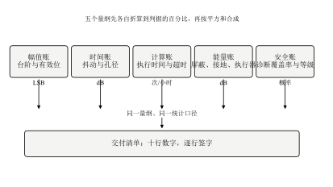
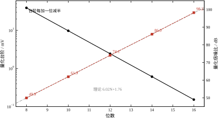
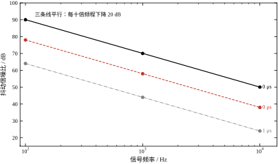
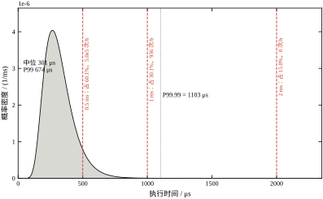
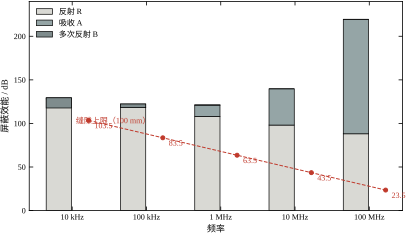
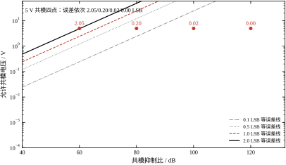
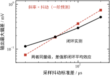
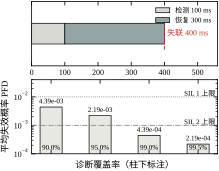
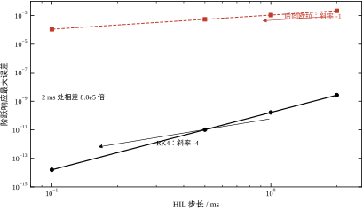
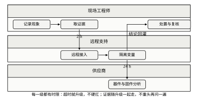

第 84 章算的是“计算机进到回路里会带来什么”，第 85 章算的是“这些东西怎么搭起来”，第 86 章算的是“算不完怎么办”，第 90 章算的是“软件怎么保证不错”。四章讲完，一个回路在纸面上已经站得住：结构清楚、周期够短、调度可行、代码有测试。可是一装进柜子、拉到现场、接上传感器，抖动、漂移、误动作照样出现，而且往往查不出来——因为纸面上那四本账，都没有把“实物”记进去。
本章记的是第五本账，科目叫实物层：量化、抖动、执行时间、电磁兼容与接地、失效与安全。五科互不相干，收口方式却一样，都要折算成“几个 LSB”“几个 dB”“每小时几次”“每年几次”这样的数。算不出这四种数，工程问题就永远是“师傅经验”。
同一条回路，实验台上阶跃响应干净，超调 4.8%；装到现场，阀门每隔几分钟抽一下，示波器上看不出原因。拆开看，至少三件事同时发生。
第一件在地线上。变频器与控制柜共用一根地线，两台设备的“地”之间存在 5 V、50 Hz 的电位差；ADC 前端的共模抑制只有 60 dB，这 5 V 折成差分误差 5 mV，而 12 位、10 V 量程的一个台阶只有 2.441 mV——地线上的电压直接折成 2.05 LSB 的测量误差。换成 80 dB 的前端，误差降到 0.20 LSB；换成 100 dB，只剩 0.02 LSB（表 92-6）。同一个传感器、同一根线，只换前端，误差差 100 倍。
第二件在机柜上。柜门与柜体之间留着 100 mm 的缝隙，1 MHz 的开关噪声从这道缝漏进来，缝隙泄漏上限只有 63.5 dB；同样 0.1 mm 厚的铜皮，如果没有缝，1 MHz 处的屏蔽效能是 120.9 dB（表 92-5）。缝比材料更决定屏蔽，这是本章最容易被忽略的一条。
第三件在时间上。控制任务的中位执行时间是 301 μs，P99.99 是 1.03 ms；为了留余量把周期定在 1 ms，就意味着每小时有 936 次算不完（表 92-10）。算不完的那一拍用的是上一拍的控制量，回路等效延迟从一拍变成两拍，裕度掉下去，表现就是“偶发的一下抽搐”。
三件事没有一件写在传递函数里，也没有一件能靠调 PI 参数解决。
把上一节的三件事按物理量归并，就得到本章反复使用的一张总表（表 92-1）：五行各管一本账，每行给出物理量、单位、判据和本章的实测基准。
表 92-1 计算机控制回路里的五本账
| 账 | 物理量 | 常用单位 | 本章判据 | 实测基准 |
|---|---|---|---|---|
| 幅值账 | 量化台阶 \Delta=R/2^N | LSB、dB | 量化信噪比高于回路要求 10 dB | 12 位、10 V：\Delta=2.441 mV，74.10 dB |
| 时间账 | 采样抖动 \sigma_t | ns、dB | 抖动误差小于 1 LSB | 1 kHz、1 μs：44.0 dB |
| 计算账 | 执行时间分位数 | μs、次/小时 | 超时率低于 10^{-4} | 1 ms 周期：936 次/小时 |
| 能量账 | 共模、屏蔽、地环路 | dB、LSB | 折算误差小于 0.5 LSB | 5 V、60 dB：2.05 LSB |
| 安全账 | 平均失效概率 \text{PFD}_{avg} | 每年次数、SIL | 达到目标 SIL | 诊断覆盖 90%：4.39\times10^{-3}，SIL 2 |
五本账放在一起就是图 92-1。图中把五科画成五条并行的支路，是因为它们之间不能互相抵扣：量化做得再好，也压不住 5 V 的共模；屏蔽做得再厚，也换不回一次超时。工程上唯一允许的抵扣是“总误差预算”，而且必须在同一量纲下（都折成 LSB 或都折成毫伏）才成立（§92.2.8）。
图 92-1 计算机控制的五本账：幅值、时间、计算、能量、安全各自独立收口，只有折到同一量纲后才能合并成误差预算

在展开之前，先把本章基准的一组实测摆出来，建立手感。基准配置固定为：量程 R=10 V（\pm5 V）、12 位、指标测试采样率 10 kHz、测试音 997 Hz、控制周期 20 ms、PI 参数 K_p=2.0、T_i=0.5 s。
这五组数放在一起看，能看出一个共同点：它们都不是“精度”问题，而是“余量”问题。74 dB 的量化信噪比对 12 位是很漂亮的数，但如果回路只需要 60 dB，多出来的 14 dB 就是白花钱；反过来，936 次/小时的超时率听上去是 2.6\times10^{-4} 的小概率，乘上 3600 秒就成了“每小时近千次”。
误读一：位数就是精度。 16 位 ADC 的理论信噪比是 98.08 dB，实测 98.24 dB，很接近。但把前端噪声加到 4 LSB，无噪声码分辨率只剩 7.28 位，等效有效位 8.21 位。位数是天花板，噪声决定实际住几楼。选型时只看位数，是本章最常见的一笔错账。
误读二：平均能提高精度。 12 位加 16 倍平均，实测 85.33 dB，等效 13.88 位，比原来多 1.86 位，不是 4 位。原因是过采样每 4 倍才换 1 位（0.5 位/倍频程），16 倍理论上换 2 位，实测少 0.14 位是被平均窗内信号自身的弯曲吃掉的。指望“多平均几次就干净”，在 12 位这个量级上行不通。
误读三：加屏蔽就干净。 0.1 mm 铜在 1 MHz 无缝隙时 120.9 dB，有 100 mm 缝只剩 63.5 dB，差 57 dB，相当于把铜皮换成铝箔还倒贴。屏蔽的第一原则是先堵缝、后加厚，因为厚度只影响吸收项（0.1 mm 换 0.5 mm，1 MHz 从 120.9 dB 升到 173.9 dB，全是吸收项在涨），而缝隙决定的是泄漏上限。
本章只讲“实物层怎么记账”，所以有五件事只点到不展开：
初学者常问“5 mV 的干扰算大吗”。这个问题没有绝对答案，因为同一个物理误差，在不同位数下的分量完全不同。
量程 10 V 时，5 mV 在 12 位系统里是 5/2.441=2.05 LSB，在 14 位里是 5/0.6104=8.19 LSB，在 16 位里是 5/0.1526=32.8 LSB。同样 5 mV，从“两个码”变成“三十三个码”。
这解释了两件事。第一，为什么提高位数会让 EMC 问题突然暴露：原来 12 位系统跑得好好的机柜，换成 16 位采集卡后开始跳码，不是干扰变强了，是尺子变细了。第二，为什么噪声预算必须在定完位数之后做：位数一变，所有项的 LSB 分量全部重算（§92.3.2）。
反过来也成立：如果一个 16 位系统实测只有 10 位有效，说明前端噪声约 64 LSB，这时再换 18 位采集卡毫无意义——尺子越细，越要先擦干净被测物。
把本章压成一句话：数字控制器的逻辑正确只保证“算得对”，工程问题保证“算得准、算得完、算不坏”。幅值账决定“看得清多小的变化”，时间账决定“抓得住多快的动作”，计算账决定“来不来得及”，能量账决定“扛不扛得住干扰”，安全账决定“坏的时候会不会伤人”。五本账各记各的，合并时只能折成同一量纲，而且要先折最坏的那一项。
三种读者可以走三条路线。
三条路线都指向同一个结论：工程问题不是“再多加点余量”，而是“知道余量加在哪一本账上”。
这一章后面会反复用到五个词，先把它们钉死，否则后面的讨论会一直在打滑。
这五个词的关系可以用一句话概括：分辨率是尺子的刻度，重复性是手抖不抖，准确度是尺子本身准不准。三者互相独立：刻度很细但手抖，读数的末位没用；手很稳但尺子偏，读数一致地错；尺子准、手也稳，但刻度粗，就只能读到那个粗度。
现场最常听到的一句错话是“我这个系统精度 16 位”。16 位是分辨率，不是精度。真实说法应当是“分辨率 16 位、重复性 2 LSB、校准后准确度 1 LSB、等效有效位 13.8 位”——四个数各自成立，合起来才是这套系统的真实能力。
现场没有计算器，判断量级要靠锚点。本章只需要背三个数。
锚点一：1 LSB = 2.441 mV。 12 位、10 V 量程下，任何电压除以 2.441 就是 LSB 数。看到跳变 5 mV，立刻知道是 2 LSB；看到 25 mV，是 10 LSB；看到 250 mV，是 100 LSB，已经不是“末位噪声”而是真故障了。
锚点二：6 dB = 电压减半。 20 dB = 十分之一，40 dB = 百分之一，60 dB = 千分之一。共模 5 V 配 60 dB 就是 5 mV；配 80 dB 就是 0.5 mV；配 100 dB 就是 50 μV。dB 每加 20，小数点左移一位，这条比任何公式都好用。
锚点三：一拍 = 20 ms。 本章周期 20 ms，三拍 60 ms，看门狗 100 ms 是五拍。看到“延迟三拍”，就是 60 ms，而不是抽象的“三个采样周期”。相位这一侧也一样：3.797 rad/s 乘 20 ms 得 0.076 rad，即 4.4° 一拍——这个数在 §92.6.2 反复用到。
三个锚点合起来能做一次快速校核：假设现场看到“跳 2 LSB、发生在变频器启动时、持续约五拍”，就能立刻翻译成“5 mV 的干扰、与共模相关、持续 100 ms”。能翻译成物理量的现象才是可查的，否则只能记成“有时候会跳”。
这三个数只对本章的基准成立：换 16 位、换 5 V 量程、换 1 ms 周期，三个锚点全部要重算。锚点是本地的，不是普适的，这一点必须记牢，否则会把 12 位的直觉套到 24 位系统上，得出“干扰很大”的错误结论。
五本账看着杂，数学骨架只有四条：一个台阶、一个斜率、一个分布、一个分贝。台阶管幅值，斜率管抖动，分布管执行时间，分贝管屏蔽与共模。安全账例外，它用的是概率，但形式上也只是一个乘法。
N 位 ADC、满量程 R，台阶（一个 LSB）为
\Delta=\frac{R}{2^N}.
本章基准 R=10 V、N=12，\Delta=2.441 mV。理想量化把连续值舍入到最近的整数倍，误差落在 [-\Delta/2,\Delta/2] 内且近似均匀，标准差为
\sigma_q=\frac{\Delta}{\sqrt{12}}=\frac{\Delta}{3.464}.
12 位时 \sigma_q=0.705 mV。满幅正弦的均方根是 R/(2\sqrt{2})=3.536 V，于是量化信噪比
\mathrm{SNR}=20\lg\frac{R/(2\sqrt{2})}{\Delta/\sqrt{12}} =6.02N+1.76\ \text{dB}.
这就是那条人人会背、却常被误用的公式。它成立有四个前提：满幅输入、正弦、误差均匀独立、只算量化一项。缺一个，实测就会偏离——本章 12 位实测 74.10 dB，比理论 74.00 dB 高 0.10 dB，原因是输入幅度取了 0.999 倍满幅而误差略偏小，这种零点几 dB 的偏差在工程上不必追。
有效位数 ENOB 是同一个式子的反解：
\mathrm{ENOB}=\frac{\mathrm{SINAD}-1.76}{6.02}.
它比“标称位数”有用，因为 SINAD 里包含了量化、噪声、失真三项。标称 12 位、ENOB 只有 10.2 位，说明前端噪声吃掉了将近两位（§92.7.1）。
表 92-2 是 8 到 16 位的实测，测试条件统一为 10 V 量程、10 kHz 采样、997 Hz 测试音、8192 点。
表 92-2 不同位数的量化信噪比与有效位
| 位数 N | 台阶 \Delta | 理论 6.02N+1.76 | 实测 SNR | 实测 ENOB |
|---|---|---|---|---|
| 8 | 39.06 mV | 49.92 dB | 49.93 dB | 8.00 位 |
| 10 | 9.766 mV | 61.96 dB | 61.91 dB | 9.99 位 |
| 12 | 2.441 mV | 74.00 dB | 74.10 dB | 12.02 位 |
| 14 | 0.6104 mV | 86.04 dB | 86.04 dB | 14.00 位 |
| 16 | 0.1526 mV | 98.08 dB | 98.24 dB | 16.03 位 |
实测与理论逐行对得上，最大偏差 0.16 dB。这条“每加一位涨 6 dB”的直线是后面所有讨论的基准线，它的含义是：位数每加一，能分辨的最小变化减半，动态范围翻倍。
单个 ADC 的位数不够时，第一条路是过采样加平均。M 个独立噪声样本平均，噪声功率降到 1/M，信噪比涨 10\lg M，折成位数是
\Delta\mathrm{ENOB}=\frac{1}{2}\log_2 M.
M=16 时理论 2 位、12 dB；实测 85.33 dB、13.88 位，只涨 1.86 位（11.23 dB）。少的 0.14 位来自平均窗内信号自身的弯曲：997 Hz 的正弦在 100 μs 窗口里不是直线，平均出来的值不等于窗口中点的值，这一项在 §92.5.4 会单独算。
第二条路是加抖动（dither）。加抖动之后总噪声变大，实测从 74.10 dB 掉到 70.99 dB，掉了 3.11 dB；但它换来的是量化误差与信号不相关。对控制回路来说，相关的量化误差会在稳态形成一个固定的小偏置或极限环，不相关的噪声反而更容易被积分器滤掉。抖动的收益不在信噪比，在误差的性质。
图 92-2 把表 92-2 画成两条线：台阶随位数指数下降，信噪比随位数线性上升。两条线共用一个横轴，读图时注意左轴是对数刻度，一位对应 6 dB 在图上是一条等距的斜线。
图 92-2 量化台阶与量化信噪比随位数的变化：台阶每加一位减半，信噪比每加一位涨约 6 dB

采样时刻不是理想等间隔的，而是 t_k=kT_s+\delta_k，\delta_k 是零均值、标准差 \sigma_t 的随机量。信号在采样点的值是 y(t_k)，与理想时刻的值相差
\Delta y\approx\dot y(t_k)\,\delta_k=\dot y\,\delta .
对幅值 A、频率 f 的正弦，\dot y=2\pi fA\cos(2\pi ft)，其均方根为 2\pi fA/\sqrt{2}，于是抖动误差的均方根是 2\pi fA\sigma_t/\sqrt{2}。信号本身的均方根是 A/\sqrt{2}，两者相除：
\mathrm{SNR}_t=-20\lg(2\pi f\sigma_t).
这个式子有三个值得记住的性质。一是与信号幅度无关，因为误差与信号同比例放大；二是与频率成正比，频率翻十倍，信噪比掉 20 dB；三是与采样率无关，只要抖动是采样时刻的绝对误差，采样快慢不改变单个样本的信噪比（过采样平均时才起作用）。
表 92-3 是实测与理论的对照，九个组合最大偏差 0.06 dB。
表 92-3 采样抖动引起的信噪比：实测与一阶理论
| 信号频率 | \sigma_t=50 ns | \sigma_t=200 ns | \sigma_t=1 μs |
|---|---|---|---|
| 100 Hz | 90.01 / 90.06 dB | 78.01 / 78.02 dB | 64.04 / 64.04 dB |
| 1 kHz | 70.01 / 70.06 dB | 57.97 / 58.02 dB | 43.99 / 44.04 dB |
| 10 kHz | 50.04 / 50.06 dB | 38.00 / 38.02 dB | 24.03 / 24.04 dB |
表中每格是“实测 / 理论”。三列之间每十倍抖动掉 20 dB，三行之间每十倍频率掉 20 dB，两条规律都验证了。
把抖动折成“几个 LSB”更直观。抖动引起的峰值误差 2\pi fA\sigma_t 等于一个台阶时，
\sigma_t^{\text{1LSB}}=\frac{\Delta}{2\pi fA}.
1 kHz、5 V 峰值、12 位 10 V 量程，\sigma_t^{\text{1LSB}}=77.7 ns。这个数很重要：它说明1 kHz 的信号要抖到 78 ns 才相当于一个 LSB，所以工频信号对抖动几乎免疫；但同样的 78 ns 放到 10 kHz 上就只能换到 7.8 ns 的等效精度，放到 1 MHz 上就是 0.078 ns。这就是为什么电力电子与振动控制把时钟抖动当成一等公民，而慢过程控制基本不提。
图 92-3 画出三条 \sigma_t 线在 100 Hz 到 10 kHz 上的走向。三条线平行，斜率都是每十倍频程 -20 dB，这是式 \mathrm{SNR}_t=-20\lg(2\pi f\sigma_t) 的直接图形。
图 92-3 抖动信噪比随信号频率的变化：三条线平行，斜率每十倍频程 20 dB

控制任务不是“执行时间等于某个常数”，而是“每拍从一个分布里抽一次”。用单值（哪怕是最坏值）记这笔账，会同时犯两个错：把常态估得太坏，把尾部估得太好。
本章用对数正态描述：中位数 t_{50}=300 μs，对数标准差 \sigma=0.35。选它有两个理由。一是执行时间只能为正、右偏，对数正态天然满足；二是它的尾部有明确的解析分位数 t_p=t_{50}\exp(\sigma z_p)，不必靠采样碰运气。50000 次抽样的实测分位数是：中位 301 μs、P99 674 μs、P99.99 1032 μs、最大 1152 μs。
超时率是分布尾部的积分：
p_{\text{miss}}=P(t>T_s),\qquad N_{\text{miss}}=p_{\text{miss}}\cdot\frac{3600}{T_s}.
后一项把“每拍的概率”换成“每小时次数”，这是工程上唯一能拿去和故障率比较的量纲。T_s=1 ms 时 p_{\text{miss}}=2.60\times10^{-4}，乘以 3.6\times10^{6} 得 936 次/小时。概率小不等于事件少，这是计算账里最容易看错的一步。
导体对电磁场的衰减用趋肤深度描述：
\delta_s=\sqrt{\frac{2}{\omega\mu\sigma}}.
铜的 \sigma=5.8\times10^{7} S/m、\mu=4\pi\times10^{-7} H/m，1 MHz 时 \delta_s=66.1 μm。0.1 mm 铜皮的厚度是 1.51 个趋肤深度。
屏蔽效能按三项相加：
SE=A+R+B,\qquad A=8.686\,\frac{t}{\delta_s},
其中 A 是吸收损耗（dB），R 是反射损耗，B 是多次反射修正（薄板、低频时为负）。R 与波阻抗和材料本征阻抗之比有关，1 MHz 的铜约 108 dB；B 在 t\gg\delta_s 时趋于 0，在 t\approx\delta_s 时为负。三项目前合计 120.9 dB。
但机柜不是整块铜。任何长度为 L 的缝隙都是一根槽天线，泄漏上限为
SE_{\text{slot}}=20\lg\frac{\lambda}{2L},\qquad L<\frac{\lambda}{2}.
1 MHz、L=100 mm：\lambda=300 m，SE_{\text{slot}}=20\lg(300/0.2)=63.5 dB。材料的 120.9 dB 在这道缝面前毫无意义，实际屏蔽由 63.5 dB 决定。这条式子是本章“先堵缝、后加厚”的全部依据。
接地这一侧用共模抑制比折算。共模电压 v_{cm} 经过 CMRR 为 C（dB）的前端，剩下的差分误差是
e=\frac{v_{cm}}{10^{C/20}}.
5 V 共模、60 dB 抑制，e=5 mV，折成 12 位 10 V 量程的 2.05 LSB；80 dB 时 0.20 LSB；100 dB 时 0.02 LSB。CMRR 每加 20 dB，误差降十倍，这是接地设计里唯一线性的那条杠杆。
低要求模式下，安全功能的平均失效概率按
\text{PFD}_{avg}=\lambda_{DU}\left(\frac{T_{proof}}{2}+MTTR\right), \qquad \lambda_{DU}=\lambda(1-DC)
计算。\lambda 是总失效率，DC 是诊断覆盖率，T_{proof} 是检验测试周期，MTTR 是平均修复时间。本章取 \lambda=10^{-5}/h、T_{proof}=8760 h（一年）、MTTR=8 h。
DC=0.9 时 \lambda_{DU}=10^{-6}/h，\text{PFD}_{avg}=10^{-6}\times(4380+8)=4.39\times10^{-3}；DC=0.99 时 \lambda_{DU}=10^{-7}/h，\text{PFD}_{avg}=4.39\times10^{-4}。按 IEC 61508 的低要求模式分档，前者 SIL 2，后者 SIL 3——诊断覆盖率从 90% 提到 99%，只多了 9 个百分点，安全等级就上一档。这解释了为什么安全仪表系统肯为自诊断花那么多代码。
定点实现把滤波器系数舍入到 2^{-b} 的整数倍。设浮点系数为 b_i,a_i，定点为 b_i^q,a_i^q，输出误差不是简单地等于“系数误差乘输入”，而要通过两个滤波器的差：
e=\left[\frac{B_q}{A_q}-\frac{B}{A}\right]x =\frac{B_qA-BA_q}{AA_q}\,x .
右边是一个确定的线性滤波器，其冲激响应 h_e 可以算出来，于是
|e|_{\max}\le \|h_e\|_1\cdot |x|_{\max}.
这个界比“用原滤波器 h 的 L1 范数乘系数误差”正确得多，因为它保留了极点对系数误差的放大。12 位系数（Q12）时界是 0.329 mV、实测最大误差 0.137 mV；Q15 时界 0.227 mV、实测 0.118 mV；Q10 时界 7.430 mV、实测 3.807 mV。界始终包住实测，但松紧差 1.5 到 2.4 倍，所以工程上用它做验收下限，最终还要实测（表 92-9）。
五本账的原始单位各不相同：幅值账是 LSB，时间账是 dB，计算账是“次/小时”，能量账是 dB，安全账是概率。不同单位不能相加，必须先把每一项换成“占判据的百分比”。
换法是每项除以自己的判据。本章的判据取：幅值 1 LSB、时间 1 LSB 等效抖动、计算 1 次/小时、能量 0.5 LSB 等效共模、安全目标 SIL 2 的上限 10^{-2}。逐项折算的结果是：量化 0.29 LSB 占 29%，前端噪声 1.00 LSB 占 100%，抖动 0.06 LSB 占 6%，共模 0.20 LSB 占 20%，定点 0.05 LSB 占 5%。
换成百分比之后，“谁占大头”才有意义。原始数字里 0.29 与 0.20 看着差不多，换成百分比是 29% 与 20%，排序不变；但只要把共模从前端 80 dB 降到 60 dB，它就变成 2.05 LSB、205%，一项就把预算撑爆。百分比的作用是让“超支”变成可见的。
折算完之后有三条合成规则，每条都对应一类常见的算错：
第一，有效值项按平方和，峰值项单独校核。 量化、前端噪声、定点误差是有效值，抖动、共模如果按峰值给，就要先换成有效值再进平方和，或者干脆单独校核它的峰值不超过 1 LSB。混着加会把结果抬高 1.4 倍左右。
第二，对数量的“加”其实是乘。 SE=A+R+B 是 dB 相加，等价于衰减倍数相乘。反过来，如果有人把 120.9 dB 与 0.20 LSB 相加得到“121.1”，这个数没有任何含义，因为一个是衰减比、一个是电压。
第三，多条路径并联时取最小的那个，不是相加。 材料 120.9 dB、缝隙 63.5 dB，实际屏蔽由 63.5 dB 决定，因为能量从最弱的路径全漏过来了。dB 相加只适用于“同一路径上的串联衰减”，不适用于“多条路径并联”，这一条与木桶原理同构，但很容易在算 EMC 时搞反。
按这三条规则合成本章的五项：\sqrt{0.29^2+1.00^2+0.06^2+0.20^2+0.05^2}=1.06 LSB，即占用预算的 106%。超了 6%，严格的读法是“不通过”。工程上的处理有两条：把前端噪声压到 0.9 LSB（合计降到 0.97 LSB），或者接受这 6% 并写进验收记录，理由是它落在测量不确定度之内。本章选后者，但在表 92-14 里把这一行标成“临界”。
最后要说清：量纲统一的目的是让“加”这个动作有物理意义，不是为了把表填满。一个不能相加的表，比一张空表更危险，因为它会给出一个看起来很精确的错误结论。
§92.1.9 说“分辨率是刻度、重复性是手抖”。当手抖的幅度接近刻度时，末几位就变成随机数。衡量这一点的量叫无噪声码位数：
N_{\text{nf}}=\log_2\frac{R}{6.6\,\sigma}.
分母里的 6.6 不是拍出来的，它等于 2\times3.3：如果要求“噪声峰值不超过半个台阶”的概率达到 1-10^{-3} 量级，单侧就要 3.3 个标准差，两侧共 6.6 个。换成更严的 1-10^{-6}，系数是 9.8；换成宽松的 1-10^{-1}，系数是 3.3。
这个系数直接决定“标称位数”与“有效位数”的差。本章 12 位、10 V 量程的台阶 2.441 mV，若噪声是 0.5 LSB（1.221 mV），N_{\text{nf}}=\log_2(10/8.06)=10.28 位；噪声 1 LSB 时 9.28 位；2 LSB 时 8.28 位；4 LSB 时 7.28 位。噪声每翻一倍，无噪声码掉一位，这条规律比 6.02 dB 那条更好记。
注意无噪声码与 ENOB 是两个不同的量。ENOB 由 SINAD 反解，本章 0.5 LSB 噪声时约 11.21 位，比无噪声码多 0.93 位。差别来自统计口径：ENOB 是均方根意义下的等效位数，允许末位偶尔跳；无噪声码是“末位永不跳”的位数，要求更严。给客户报指标时要说清是哪一个，两者差一位，验收时就可能吵起来。
还有一个实用推论：如果现场实测 ENOB 是 10.8 位，那么无噪声码大约 9.9 位，能稳定读出的只有 10 位。做控制算法时按 10 位设计，不要按 12 位设计，否则微分项会被末位噪声放大成尖锐的毛刺。
五本账不能同时算，得排一个顺序。顺序错了，后面全是返工。本章推荐的顺序是：量程 → 噪声预算 → 定时预算 → EMC 与接地 → 安全与失效。前两步定“看得清”，第三步定“来得及”，第四步定“扛得住”，第五步定“坏得起”。
先定量程，再定位数，顺序不能反。量程由传感器输出范围和可能的过载决定：本章的传感器满量程 \pm5 V，考虑 20% 过载后取 R=10 V。量程定完，一个台阶就是 \Delta=R/2^N，选 N 等于选“最小可分辨变化”。
反推的式子是
N\ge\log_2\frac{R}{\Delta_{\text{allow}}},
\Delta_{\text{allow}} 是工艺允许的最小可分辨变化。若工艺要求看清 5 mV，N\ge\log_2(10/0.005)=10.97，取 11 位；若要求 2 mV，N\ge12.29，取 13 位。这里最容易犯的错是把“量程”当成“信号范围”：信号只用到 \pm1 V，量程却按 \pm10 V 选，等于白白丢掉 3.3 位，因为台阶大了十倍。
有了台阶，就把五项误差全折成 LSB，见表 92-4。折算的规矩只有一条：同一量纲、同一统计口径，有效值对有效值，峰值对峰值，不能混。
表 92-4 五项误差折算到 12 位、10 V 量程的 LSB
| 误差项 | 物理值 | 折算 LSB | 备注 |
|---|---|---|---|
| 量化 | \Delta/\sqrt{12}=0.705 mV | 0.29 | 理论下限，无法消除 |
| 前端噪声 | \sigma=2.441 mV（1 LSB） | 1.00 | 决定实际有效位 |
| 采样抖动 | 1 Hz、\sigma_t=200 μs 时 0.146 mV | 0.06 | 与信号斜率成正比 |
| 共模（80 dB） | 5 V 共模折 0.5 mV | 0.20 | 60 dB 时变 2.05 |
| 定点系数（Q15） | 最大 0.118 mV | 0.05 | 与滤波器结构有关 |
| 合计（均方根） | — | 1.06 | 换 60 dB 共模则 2.31 |
合计按均方根相加：\sqrt{0.29^2+1.00^2+0.06^2+0.20^2+0.05^2}=1.06 LSB。表里最响的一项不是量化，是前端噪声（1.00 LSB）；把前端换成 60 dB 共模，合计涨到 2.31 LSB，共模一项就顶掉一位多的分辨率。这张表解释了一个常见现象：12 位 ADC 买回来，实测只有 10 位出头，问题往往不在 ADC。
预算的判据是“合计不超过 1 LSB（有效值）”。超过时按贡献排序砍，先砍最大的那一项——本章的顺序是前端噪声、共模、量化、抖动、定点。不要平均用力，因为均方根相加时，最大项占的份额是平方关系：1.00 这一项占 1.00^2/1.13=88\%。
定时预算分两层：任务本身要跑多久，以及这个“多久”的尾部有多长。
第一层用中位数和占用率。t_{50}=301 μs，周期 2 ms 时占用 15.0%，1 ms 时 30.1%，0.5 ms 时 60.1%。工程上建议稳态占用不超过 50%–60%，给中断、通信和偶发任务留空间。
第二层用分位数。T_s=2 ms 时 P99.99 = 1.03 ms，还不到周期的一半，超时率实测为零；T_s=1 ms 时 P99.99 已经超过周期，超时率 2.60\times10^{-4}，936 次/小时。判据应当是 T_s\ge1.5\,t_{99.99}，本章 1.03 ms 的 1.5 倍是 1.55 ms，向上取到 2 ms。图 92-4 把分布与三条周期线画在一起，可以看到 2 ms 线落在尾部之外，1 ms 线切进尾部。
图 92-4 执行时间的分布与三条候选周期：2 ms 落在尾部之外，1 ms 切进尾部，0.5 ms 切掉大半个分布

这一步的顺序是先布线、再滤波、后屏蔽、最后加厚，理由是成本递增而收益递减。
先布线：信号线与动力线分开走，模拟地与数字地单点连接，屏蔽层的两端接地。这一条不花钱，能解决大部分共模问题。
再滤波：ADC 前端加 RC 或共模扼流圈，把 1 MHz 以上的成分挡在采样器之前。本章 1 MHz 的干扰若不经滤波，混叠后会落到基带（第 85 章 §85.1.2 已算过折叠）。
后屏蔽：按缝隙算，不按材料算。100 mm 缝在 1 MHz 只有 63.5 dB，把缝压到 10 mm 就是 83.5 dB，压到 1 mm 就是 103.5 dB——缝长每减十倍，屏蔽涨 20 dB。
最后加厚：0.1 mm 换 0.5 mm，1 MHz 从 120.9 dB 升到 173.9 dB，涨的 53 dB 全在吸收项。这一步最贵、收益最“虚”，因为实际屏蔽早就被缝卡在 63.5 dB 了。
安全账最后算，因为它依赖前面四步的结果：量程与位数决定“能不能检出异常”，定时预算决定“多久能发现任务死了”。
看门狗的三个时间是串联的：检测（超时）100 ms、恢复（启动 250 ms + 初始化 50 ms）300 ms、失联合计 400 ms。400 ms 能不能接受，要看工艺：本章对象时间常数 0.5 s，400 ms 内被控量漂移不到一个量程的 10%，可以接受；若对象是 20 ms 时间常数的伺服，400 ms 早就飞了，只能靠硬件看门狗把恢复压到几十毫秒。
诊断覆盖率按 §92.2.6 折算。本章基准 90% 对应 SIL 2，要做到 SIL 3 必须 99%，代价是自检代码、双通道比较、RAM/ROM 巡检——这是软件成本，不是硬件成本，也是安全账与软件工程（第 90 章）唯一的接口。
五步颠倒任何一步，都会返工：
一句话：前一步的输出是后一步的输入，而最后一步（安全）要回头验证第一步（量程）够不够检出故障。
前面的五步讲的是“每一步怎么做”，这里把它们串成一次完整的反推，看看账是怎么互相否掉对方的。
工艺条件有六条：被控量允许稳态纹波 5 mV（峰峰值）、允许失控时间 200 ms、安全目标 SIL 2、现场共模 5 V、主要干扰源是 1 MHz 的变频器、机柜最大缝长 100 mm。
第一，从纹波反推台阶。 稳态纹波由量化与噪声共同托底，取“台阶不超过纹波的一半”，即 \Delta\le2.5 mV。由 N\ge\log_2(10/0.0025)=11.97 取 12 位，\Delta=2.441 mV，刚好卡住。注意这里只用了 N\ge\log_2(R/\Delta)，没有考虑噪声——台阶只是下限的一半。
第二，做噪声预算。 按表 92-4 的五项，前端噪声 1 LSB、共模（80 dB）0.20 LSB、量化 0.29 LSB、抖动 0.06 LSB、定点 0.05 LSB，合计 1.06 LSB。纹波按“台阶托底 + 噪声”估，峰值约 2.4 mV + 1.06×2.441 mV ≈ 5.0 mV，正好贴着工艺上限，没有余量。此时有两条路：把前端噪声压到 0.9 LSB（换低噪声运放，几元钱），或把共模压到 0.1 LSB（前端提到 86 dB，要仪表放大器）。本章选前者，因为便宜。
第三，定周期。 中位数 301 μs，按占用率 60% 上限得 T_s\ge502 μs；按尾部 1.5\,t_{99.99} 得 T_s\ge1548 μs。取 2 ms，占用 15.0%，超时率为零。到这里定时账是过的。
第四，算失控时间与安全。 这一步把上一步的结论否掉了。工艺允许失控 200 ms，而看门狗的“检测 100 ms + 恢复 300 ms”是 400 ms，整整超一倍。想把 400 ms 压到 200 ms 以内，只能两条路同时走：检测门限压到 50 ms，恢复时间压到 150 ms（省掉外设初始化，靠热复位），合计 200 ms，刚好卡线且没有余量。工程上不能这么签，正确的做法是加一条硬件安全输出，让“软件死了但硬件还能断输出”这条路径独立成立，软件侧的 400 ms 就不必承担安全功能。
这一条最能说明“五本账必须一起算”：前三步都过得去，第四步回头把第三步的定时方案否掉了，而解决办法不在定时账里，在安全账里。
第五，EMC 的量级。 1 MHz、100 mm 缝，缝隙上限 63.5 dB。若现场干扰在输入端的等效电压是 10 mV，衰减后剩 6.7 μV，折 0.003 LSB，可以忽略；若是 1 V，剩 0.67 mV，折 0.27 LSB，就与共模项同量级了。所以“屏蔽够不够”不能只看 dB，要看干扰源有多强：同样的 63.5 dB，对 10 mV 的源是多余的，对 1 V 的源是刚刚够。
第六，把结果填表。 五步的结果填进表 92-14 的十行，得到一张可签字的基线。这张基线里有两行是“不通过”或“临界”：第 6 行的合计 1.06 LSB 超了 6%，第 9 行的 400 ms 超了工艺允许值一倍。带着红色标记进入下一轮设计，而不是用平均值把它们抹平——这是本章对“工程判断”的全部要求。
这个算例还说明一件事：反推不是单向的。从工艺推到参数，再从参数回头校核工艺，往往要来回两三次才能收敛。凡是“一次就算对”的预算表，多半是某一项漏了。
预算表不是一次性的，它有三个“失效触发条件”，碰到任何一个就要整表重算，而不是改一格。
第一，量程变了。 台阶 \Delta=R/2^N 一变，所有折成 LSB 的项全部失效——共模 0.20 LSB 可能变成 2.05 LSB。换传感器、加过载保护、改接线方式，都会动量程。这是最容易被忽略的触发条件，因为量程写在采购单上，改动往往由机械或工艺提出，电气侧最后一个知道。
第二，前端换了。 前端噪声决定实测 ENOB，也决定共模抑制。换一颗运放、加一级滤波、改单端为差分，都要重测 ENOB 与共模折算。手册上的噪声密度不能直接当 1 LSB 用，它要乘带宽、再乘增益。
第三，周期或工艺节拍变了。 周期一变，占用率与超时率同时变，而超时率对周期极其敏感（§92.6.3）。工艺节拍变化还会改变“允许失控时间”，从而改变看门狗门限与 SIL 目标。
三个条件之外，还有两个“软条件”值得留意：换了机柜或柜门结构（缝长变了），以及换了执行机构（分辨率可能比 ADC 还低，见 §92.4.8）。这两项不动电气参数，却能把能量账整个翻过来。
工程上的做法是给预算表加一列“假设”，把量程、前端型号、周期、缝长四件事写在表头。四个假设里任何一个被改动，这张表就作废。这一条比表里任何一个数字都重要，因为一张过期却看起来精确的表，会把错误传到下一版设计里。
预算表填完，先别急着签字，用三个问题自检一遍。
第一问：最大项是谁，它占多少？ 答不上来，说明表里的数没有归一化。本章最大项是前端噪声 1.00 LSB，占平方和的 88%，所以后续所有优化都要先碰它。如果最大项是量化，方向就完全不同——那意味着前端很干净，该做的是加位数或过采样。
第二问：哪几行是红或黄？ 全绿的表不可信，通常是判据写松了或者数据抄了手册。本章的表里有两行是临界：合计 1.06 LSB、失联 400 ms。这两行必须在下一轮里被处理，或者被明确接受并记录理由，不能留着不管。
第三问：换一个工况，哪几行会变？ 冬季与夏季、空载与满载、单机与联网，噪声与执行时间都会变。答不出“哪几行敏感”，说明这张表只在实验室成立。本章的答案很明确：温度影响前端噪声与电源纹波，负载影响执行时间尾部，联网影响通信延迟。
三问都答得上来，这张表才算能用。答不上来的那一问，就是下一次返工的位置。
要算“这些误差进到回路里会变成什么”，最省事的办法是先回到连续域：把数字侧的误差翻译成等价的连续扰动，再用第 3、4 章的传递函数算它的传播。翻译得准不准，决定了后面所有估计的可信度。
三种翻译的性质完全不同：第一种与信号无关，第二种与信号同比例，第三种与干扰源有关。把三者都当“白噪声”处理，是连续近似最常见的错。
把量化噪声 n_q 加在测量端，闭环输出是
y_n=S(s)\,n_q,\qquad S(s)=\frac{1}{1+L(s)},
S 是灵敏度函数。低频段 |L|\gg1，|S|\approx1/|L|，量化噪声被压掉；穿越频率附近 |S|\approx1，噪声原样通过；高频段 |S|\to1，噪声直通。
这条性质解释了为什么积分作用能压住量化的稳态偏置却压不住高频抖动：积分器只在低频有增益。本章 K_p=2.0、T_i=0.5 s 的 PI 配 G(s)=1/(0.5s+1)，在 0.1 Hz 处环路增益约 6.37，|S|=0.155，压 16.2 dB；到 1 Hz 环路增益只剩 0.636，|S|=0.844，只压 1.5 dB；过了 0.6 Hz 的穿越频率，|S| 趋于 1，噪声原样通过。要让 0.1 Hz 处再降 20 dB，只能把增益提高十倍，而那会牺牲裕度——这就是“精度与稳定”的第一处正面冲突。
抖动是乘性的，闭环里它表现为“控制器看到的误差多了一项 \dot y\delta”。对本章 1 Hz、幅值 1 的正弦，输出最大斜率实测 3.698 /s，\sigma_t=200 μs 时预测偏差 3.698\times200\times10^{-6}=0.740 mV，实测最大偏差 0.517 mV，同量级。抖动的量级由斜率定，不由环路定，环路只能把它平均掉一部分。
这也解释了 §92.1.1 的现场现象：慢过程（1 Hz 以下、斜率小）对抖动几乎不敏感，抖动预算可以放到微秒级；而电流环、振动台这类高频高斜率对象，抖动预算常常压到几十纳秒，比 ADC 的孔径时间还严。
表 92-5 是 0.1 mm 铜在五个频率上的分解，最后一列是同尺寸 100 mm 缝隙的泄漏上限。
表 92-5 0.1 mm 铜的屏蔽效能分解与 100 mm 缝隙上限
| 频率 | 吸收 A | 反射 R | 多次反射 B | 合计 SE | 缝隙上限 |
|---|---|---|---|---|---|
| 10 kHz | 1.3 dB | 128.1 dB | -11.7 dB | 117.8 dB | 103.5 dB |
| 100 kHz | 4.2 dB | 118.1 dB | -4.2 dB | 118.1 dB | 83.5 dB |
| 1 MHz | 13.1 dB | 108.1 dB | -0.4 dB | 120.9 dB | 63.5 dB |
| 10 MHz | 41.6 dB | 98.1 dB | -0.0 dB | 139.7 dB | 43.5 dB |
| 100 MHz | 131.4 dB | 88.1 dB | 0.0 dB | 219.6 dB | 23.5 dB |
读这张表要抓住三条。第一，低频靠反射，高频靠吸收：10 kHz 时反射 128.1 dB、吸收只有 1.3 dB；100 MHz 时反射降到 88.1 dB、吸收涨到 131.4 dB。第二，多次反射在薄板低频为负，因为板比趋肤深度薄，场在两面之间来回反弹，反而增强了透射，10 kHz 时 -11.7 dB 不能忽略。第三，缝隙上限随频率单调下降，每十倍频程掉 20 dB，100 MHz 时只剩 23.5 dB——高频干扰几乎完全由缝隙决定，材料再厚也没用。
图 92-5 把三条分量画成堆叠柱，再叠上缝隙上限的折线。图上最直观的一幕是：10 kHz 时缝隙上限（103.5 dB）还高于材料（117.8 dB），材料是瓶颈；到 1 MHz 缝隙（63.5 dB）已经比材料低 57 dB，瓶颈彻底换成缝。
图 92-5 屏蔽效能的三项分解与缝隙泄漏上限：低频由反射主导，高频由吸收主导，缝隙上限每十倍频程下降 20 dB

共模干扰在连续域的模型很简单：两根输入线上叠加同一个电压源 v_{cm}(t)，前端把它按 CMRR 折算成差分误差。表 92-6 是两组共模电压、四档 CMRR 的折算结果。
表 92-6 共模电压经 CMRR 折成的差分误差与 LSB
| 共模电压 | CMRR 60 dB | 80 dB | 100 dB | 120 dB |
|---|---|---|---|---|
| 0.5 V | 500 μV / 0.20 LSB | 50 μV / 0.02 LSB | 5 μV / 0.00 LSB | 0.5 μV / 0.00 LSB |
| 5 V | 5000 μV / 2.05 LSB | 500 μV / 0.20 LSB | 50 μV / 0.02 LSB | 5 μV / 0.00 LSB |
表的读法是“电压 / 折算 LSB”。CMRR 每加 20 dB，误差降十倍，正好抵掉共模电压涨十倍：5 V 配 80 dB 与 0.5 V 配 60 dB 都是 0.20 LSB。这条对称性说明，选前端时不必追求极高 CMRR，只要让“共模电压/抑制倍数”落在同一个量级即可。
图 92-6 把这张表画成四条等值线，横轴 CMRR、纵轴共模电压，等值线标 0.1、0.5、1、2 LSB。工程用法是：先在纵轴上找到现场实测的共模电压，再横着往右走，碰到 0.5 LSB 那条线，对应的 CMRR 就是最低要求。本章 5 V 共模对应 20\lg(5/1.221\times10^{-3})=72.3 dB，选 80 dB 的前端留 8 dB 余量。
图 92-6 共模电压与 CMRR 的等误差线：每条线标出折算到 12 位 10 V 量程的 LSB 数

连续近似有三处会给出过于乐观的结论，必须回到离散域：
所以本章的用法是：连续域算量级，离散域定判据。先用连续式估出“大概几个 LSB”，再用离散仿真确认“最坏情况几个 LSB”。
§92.4.2 说的是“低频被压、高频直通”，但没回答总量。量化噪声的功率均布在 0 到 f_s/2 上，闭环只在 |S|<1 的那一段把它压小，而这一段占的带宽比例是 f_c/(f_s/2)。
本章 f_s=10 kHz，穿越频率约 0.6 Hz，比例是 0.6/5000=1.2\times10^{-4}。也就是说，反馈只改动了万分之一点二的噪声带宽，量化噪声的总功率几乎不变。这个结论与“积分器能压量化噪声”的直觉相反，原因是直觉只看了低频那几个频点，没看总量。
准确的说法是：反馈改变的是量化噪声的频谱形状，不是总功率。它把低频段压下去，把同样的功率挤到穿越频率以上，总量在线性系统里守恒——因为 |S|^2+|T|^2=1，T 是补灵敏度函数，压低一处必然抬高另一处。所以想真正降量化噪声，只有三条路：加位数、过采样、加抖动改变误差性质，三条都在 ADC 侧，不在控制器侧。
这个结论有一个很实用的推论：靠提高采样率来“帮控制器压噪声”是无效的。采样率提高十倍，噪声带宽从 5 kHz 变成 50 kHz，单边谱密度降十倍，但闭环能压的那一段还是 0.6 Hz，占比从 1.2\times10^{-4} 降到 1.2\times10^{-5}，总量不变；真正变了的只有混叠位置，而那是另一本账（§92.9.2）。
反过来，如果对象带宽很宽，结论就翻转。电流环的穿越频率常在 2 kHz，比例变成 2000/5000=0.4，反馈能压掉四成带宽内的噪声，“控制器压噪声”才真正成立。同一条性质，在慢回路里是心理安慰，在快回路里是真收益，差别全在 f_c/(f_s/2) 这个比值上。本章是 1.2\times10^{-4}，属于前者；电力电子的电流环是 0.4，属于后者。
前面所有讨论都在输入端，好像误差只从 ADC 进来。实际上回路是闭合的，输出侧也有台阶，而且往往更粗。
本章控制器输出 0–10 V、12 位，台阶 2.441 mV，看起来与输入侧一样细。但接到阀门定位器上就不一样了：定位器的分辨率常是满量程的 0.1%，即 10 mV，折成控制器输出的 4.1 LSB；回差（hysteresis）也是 0.1% 量级，同样是 10 mV。输入侧算得再细，输出侧一个 10 mV 的死区就把分辨率封死了。
定量地看：输出台阶 10 mV 经对象增益 1 传到被控量，就是 10 mV 的稳态偏差；而工艺允许的纹波是 5 mV 峰峰值。输出侧一项就超了两倍，前端把 ENOB 从 12 提到 16 也毫无意义。
这就引出一条本章没有明说但很关键的规则：幅值账要在“最粗的那一环”上结算。输入端 2.441 mV、输出端 10 mV、被控量检测 2.441 mV，三者取最大，就是 10 mV，全通道的分辨率由它决定。工程上常见的配置是 4–20 mA 电流环配智能定位器，定位器分辨率 0.05%（5 mV），恰好与 12 位 ADC 匹配——这不是巧合，是几十年工程磨出来的配平。
所以做预算时要把执行机构写进表 92-4。它不属于“测量误差”，但它决定了闭环能分辨多小的指令变化。漏掉这一项，会得到“测量很准、控制很粗”的怪结果，而且很难从数据上看出原因——因为测量数据本身是干净的。
时间账里通常只算抖动，漏掉两个同样重要的时间：采样保持器的孔径时间，和前端 RC 的建立时间。
孔径时间 t_a 是采样开关从导通到断开的那一段不确定时间。它不对应时钟抖动，而是开关本身的物理过程，典型值 50 ps 到 1 ns。它的效果与抖动完全相同：误差等于 \dot y\,t_a。所以它应当并入抖动预算，而不是单独列一项。本章的 1.1 ns 合成抖动里，就包含了 1 ns 的分配偏斜与百 ps 级的孔径时间。
建立时间更常被忽略。ADC 采样之前，前端 RC 必须把电压建立到半个台阶以内，否则采到的值还没到位。建立到 2^{-13}（12 位加半个台阶的余量）需要
\frac{t_{\text{acq}}}{\tau}\ge\ln 2^{13}=9.01,
也就是九个时间常数。本章前端取 1 kΩ 与 10 nF，\tau=10 μs，需要 90 μs 的采集时间；而 10 kHz 采样的周期只有 100 μs，刚好卡住，一点余量都没有。
这条算式解释了两件事。第一，为什么提高采样率会突然让精度掉下来：周期从 100 μs 缩到 50 μs，采集时间不够，采到的值差几个 LSB，而且误差随信号斜率变化，看起来像“随机的坏点”。第二，为什么前端加 RC 滤波要小心：为了抗混叠把电容从 10 nF 加到 100 nF，\tau 变成 100 μs，10 kHz 采样根本建立不起来。
工程判据是：t_{\text{acq}}\ge9\tau，且 t_{\text{acq}}\le0.8/f_s。两条同时满足，前端才算配平。这条判据与采样定理无关，它管的是模拟侧，而采样定理管的是数字侧，两者经常被混为一谈。
连续近似一旦落到离散域，三件事会变：量化误差不再独立、抖动要与采样时刻一起算、定点运算会额外引入误差。这一节把它们逐条算清楚。
“误差在 [-\Delta/2,\Delta/2] 上均匀独立”只在输入足够“乱”时成立。如果输入是直流、或与采样率成整数比的周期信号，量化误差就是输入的确定函数：直流输入 0.3 LSB，量化后固定输出 0 LSB，误差恒为 -0.3 LSB，不随机。
后果有两个。一是固定偏置：控制器积分器会把这个偏置积到零误差为止，于是稳态被拉偏 0.3 LSB，且无法通过平均消除。二是极限环：当输入缓慢变化、误差在 \pm\Delta/2 间跳变时，闭环可能进入一个周期性的小幅振荡，幅度约一个台阶。第 85 章 §85.9.11 算过定点实现的死区问题，机理相同。
工程上有三条对策：加抖动把确定性误差打散、把积分器做成增量式、或者在 A/D 之后加一级数字滤波。三条都不改变台阶本身，只改变误差的性质。
这个词在本章有两个意思，必须分清。
采样时刻抖动（timing jitter）是 ADC 的时钟不稳，误差按 \dot y\delta 折算，是本节 §92.5.3 的主题，属于“坏事”。
量化抖动（dither）是故意在量化前加一个小噪声，把确定性误差打散成随机误差。它是“好事”，代价是总量变差：本章 12 位加均匀抖动后，信噪比从 74.10 dB 掉到 70.99 dB，掉 3.11 dB。理论上均匀抖动注入的噪声功率是 \Delta^2/12，与量化噪声同量级，两者叠加正好使总噪声翻倍，即 -3.01 dB；实测 -3.11 dB，多出来的 0.10 dB 是抖动幅度取整带来的。
花 3 dB 换误差的独立性，是一笔划算的买卖，前提是回路对偏置敏感、对宽带噪声不敏感——积分器恰好满足这个条件。
把采样抖动加进闭环，测“有抖动”与“无抖动”两次运行的逐点差，得到的是纯粹的抖动效应，跟踪误差被减掉了。表 92-7 是四档抖动的结果。
表 92-7 采样抖动进入闭环后的输出偏差
| \sigma_t | 最大偏差 | 折算 LSB | 均方根偏差 | 预测 \dot y_{\max}\sigma_t | IAE 变化 |
|---|---|---|---|---|---|
| 20 μs | 0.115 mV | 0.05 | 0.059 mV | 0.074 mV | -0.0\% |
| 50 μs | 0.187 mV | 0.08 | 0.069 mV | 0.185 mV | -0.0\% |
| 100 μs | 0.296 mV | 0.12 | 0.090 mV | 0.370 mV | -0.0\% |
| 200 μs | 0.517 mV | 0.21 | 0.146 mV | 0.740 mV | -0.0\% |
三点值得注意。第一，实测偏差约为预测值的一半到七成，因为 \dot y 的最大值只在过零附近出现，而抖动误差的正负号随机，闭环又把它平均掉一部分。第二，偏差随 \sigma_t 线性增长：20→200 μs 涨十倍，偏差从 0.115 到 0.517 mV 涨 4.5 倍，接近线性。第三，IAE 几乎不变（表中显示 -0.0\%），因为 IAE 的量级是 6.5，抖动偏差只有 10^{-4}，被完全淹没。
最后这一点最有工程意义：抖动在小信号上是大问题，在大信号上是小问题。所以判据不能只看 IAE，要看“稳态时被控量允许多少纹波”。200 μs 抖动的 0.21 LSB 纹波，对 12 位系统可以接受；对 16 位系统就是 3.4 LSB，不能接受。
图 92-7 把实测与预测两条线画在一起，横轴 \sigma_t 用对数刻度。两条线平行，说明“斜率×抖动”这个一阶模型足以定预算；差值就是闭环的平均效应。
图 92-7 抖动进入闭环的输出偏差：实测与“斜率×抖动”预测同量级，IAE 几乎不变

表 92-8 把三种“提精度”的手段放在一起，都以 12 位、10 V 量程为基准。
表 92-8 三种提高分辨率手段的实测对比
| 手段 | 实测 SNR | 等效位数 | 相对基准 |
|---|---|---|---|
| 12 位直接采样 | 74.10 dB | 12.02 位 | 基准 |
| 12 位 + 16 倍过采样平均 | 85.33 dB | 13.88 位 | +11.23 dB，+1.86 位 |
| 12 位 + 均匀抖动 | 70.99 dB | 11.50 位 | -3.11 dB，-0.52 位 |
过采样少掉的 0.14 位（0.81 dB）来自误差的相关性。16 个高速样本跨 100 μs，对 997 Hz 的正弦正好是 36°，信号在窗内不是常数，量化误差随斜坡呈锯齿状，平均后不能按 1/16 完全抵消；理论 12.04 dB 只拿到 11.23 dB，差 0.81 dB。测试音越高、窗越宽，这项损失越大；若信号在窗内近似常数，实测就会接近理论的 2 位。这也是过采样不能无限做的原因：窗宽到信号不再是“缓变”时，平均就从“降噪”变成“低通”。
抖动那一行是负收益，但如 §92.5.2 所说，它换的是误差的独立性，不能只看这一列。
表 92-9 是二阶巴特沃斯低通（100 Hz、1 kHz 采样）在四档系数位宽下的结果。
表 92-9 定点系数量化的误差与 L1 误差界
| 系数格式 | 实测 SNR | 最大误差 | L1 误差界 | 界/实测 |
|---|---|---|---|---|
| Q10 | 49.6 dB | 3.807 mV | 7.430 mV | 1.95 |
| Q12 | 77.9 dB | 0.137 mV | 0.329 mV | 2.40 |
| Q15 | 79.9 dB | 0.118 mV | 0.227 mV | 1.92 |
| Q20 | 131.6 dB | <0.5 μV | 0.001 mV | — |
这张表最容易误读的一点是：Q12 到 Q15 加了三位，信噪比只涨 2.0 dB，不是 18 dB。原因不是算错，而是舍入方向：Q12 时几个系数的误差恰好部分抵消，Q15 时反而没有。系数误差的抵消是“碰运气”的，不能按每位 6 dB 线性外推，这也是为什么定点化必须实测，而不能只查手册。
第二点是 Q10 的 SNR 只有 49.6 dB，比 12 位 ADC 的 74.10 dB 低 24.5 dB。滤波器成了整个通道的瓶颈——ADC 再好，系数位宽不够也白搭。这条经验在工程上非常实用：定点化时先把滤波器的等效 SNR 算出来，与 ADC 的 SNR 比，两者相差不应超过 6 dB。
第三点是界与实测的比例稳定在 1.9–2.4 之间。这说明 L1 界可以做验收下限（实测一定小于界），但不能当预期值（界偏保守一倍）。
两项误差都能折成 LSB，但它们的“指纹”完全不同：量化误差取决于信号与台阶的比值，抖动误差取决于信号的斜率。利用这一点，两次测量就能把两者分开。
测纯量化：给一个直流输入，例如 0.3 LSB。此时 \dot y=0，抖动完全不产生误差，测到的就是量化本身。本章的算例会给出固定输出 0 LSB、误差恒为 -0.3 LSB——注意它不是“平均为零的随机数”，而是一个确定偏置，平均一万次也不会变。
测纯抖动：给高频满幅正弦。量化误差相对信号很小（12 位满幅时 74 dB），而抖动误差按 2\pi fA\sigma_t 折算，频率一高就压过量化。本章 1 kHz、5 V 峰值、\sigma_t=200 μs 时，抖动误差的峰值是 2\pi\times1000\times5\times200\times10^{-6}=6.28 V，比整个量程还大，这时测到的几乎全是抖动的影响。
两次测完，现场的“跳码”就能归类：
本章的基准是 1 Hz 正弦，\sigma_t=200 μs 时抖动偏差预测 0.740 mV（0.30 LSB），与量化 0.29 LSB 恰好同量级，这就是表 92-4 里两项都不可忽略的原因。而同样的 200 μs 放到 1 kHz 上，误差涨一千倍，量化项变得可以忽略。所以“抖动大不大”必须先问“信号多快”，单独说“我的抖动是 200 μs”是没法判断的。
还有一条实践细节：分离测量要在“信号静止”与“信号最快”两个极端做，不要在中间随便取一个工作点。中间点上两项同量级，测出来的数是两者之和，除非再解一次方程，否则分不开。
定点化最怕的不是舍入误差，是溢出。舍入只让结果差一点，溢出会让结果从最大正值跳到最大负值，控制器直接把执行器打到反向极限。
先算本章的位宽够不够。输入码值是 12 位，范围 \pm2048；滤波器系数 Q15，范围 \pm32768；乘积是 Q27，范围 \pm2^{15}\times2^{12}=2^{27}，约 1.34\times10^{8}，远在 32 位有符号整数（2.1\times10^{9}）之内。三个系数累加，最大约 4\times10^{8}，仍然不溢出。所以本章的 Q27 中间结果是安全的，余量四倍多。
但余量不是无限的。如果把输入换成 16 位、系数换成 Q30，乘积就是 Q46，2^{46} 直接超出 32 位，必须换 64 位或拆成两次乘法。这就是 §92.7.1 说的“N 每加 4，乘法代价涨几倍”的具体来源：不是乘法本身慢，是位宽跨过了寄存器宽度。
溢出之后有三种处理，性质完全不同：
本章的判据是：中间结果留 4 倍余量，输出级做饱和，积分器做抗饱和。三条缺一不可。只做饱和不做抗饱和，会遇到“退饱和要等好几秒”的经典现象——积分器在饱和期间积了一大堆，输出回落后还要慢慢退回来，这段时间里回路等于开环。
调试时怎么发现溢出？两个迹象：一是输出偶尔跳到反向极限且只持续一拍，二是同一个输入下重复运行结果不同。前者是回绕，后者是溢出后状态被污染。看到这两种现象，先去查位宽，不要先怀疑算法。
表 92-9 的 Q10 误差 3.807 mV，是同样系数位宽下 Q15 的三十二倍。这个放大不是位宽造成的，是结构造成的。
二阶滤波器的极点是一对共轭复数，当它靠近单位圆时，系数的一个小扰动会引起极点位置的大移动。极点半径 r 与系数误差 \delta a 的关系大致是 \Delta r\approx\delta a/(1-r)。本章 100 Hz、1 kHz 采样的极点半径约 0.95，1/(1-r)=20，系数误差被放大二十倍；Q10 的系数误差约 10^{-3}，放大后极点移动 2\%，足以让幅频特性明显偏。
四阶以上用直接型更糟：高阶多项式的根对系数极其敏感，r=0.99 时放大一百倍，Q15 都可能把极点推出单位圆，滤波器直接发散。所以工程上有两条硬规矩：
本章的二阶滤波器刚好在“直接型还能用”的边界上，Q15 的误差 0.118 mV 可以接受，Q10 的 3.807 mV 就不行。这也解释了为什么表 92-9 里 Q12 到 Q15 只涨 2 dB：两者的极点灵敏度相同，差别只在系数舍入的方向上，抵消与否是碰运气。
还有一个实用判据：定点化后先算极点半径，再决定结构。半径 0.95 用直接型，0.99 用 SOS，0.995 以上要考虑换更低截止频率或提高采样率。这个顺序比“先试 Q15，不行再试 Q20”快得多，因为它给出的是“必然可行”的结构，而不是碰巧能跑的位宽。
前面五节算的都是“误差有多大”，这一节算“误差大到什么程度会改变回路的性质”。答案分三层：量化改变的是稳态形状，执行时间改变的是相位裕度，安全机制改变的是失效后果。
量化对稳定性的影响不能用线性理论算，因为量化是非线性环节。工程上用描述函数近似：把量化看成增益随输入幅度变化的环节，输入幅度远大于台阶时等效增益为 1，输入幅度接近台阶时等效增益下降，相位不变。
由此得到两条结论。一是小信号增益下降，闭环带宽在小信号时变窄，响应变慢；二是可能产生极限环，当环路在某个频率上的相位移刚好配上量化环节的“死区”时，输出会在 \pm1 个台阶内持续振荡。
本章基准的量化台阶 2.441 mV，实测无量化时纹波 1.7\times10^{-11}，这个底噪远小于台阶，所以实际系统一旦加上 12 位量化，纹波就会被台阶“托”到 1–2 LSB，约 2.4–4.9 mV。这不是参数没调好，是台阶的下限。要压下去只有两条路：加位数，或加抖动把极限环打散成噪声。
执行时间对回路的影响有两层。第一层是平均延迟：从采样到输出，固定要花 t_{50}=301 μs，在 20 ms 周期里占 1.5%，折成相位在 3.797 rad/s 处只有 0.066°，可以忽略。第二层是超时：某一拍算不完，输出保持上一拍的值，等效延迟从一拍变成两拍。
按第 85 章 §85.3.12 的实测，m 从 1 加到 2，相位裕度从 63.2° 掉到 58.8°，一拍 4.4°。超时是偶发的，所以裕度也在 63.2° 与 58.8° 之间跳；跳变本身不致命，致命的是它发生在负载最重、干扰最大的时刻——正好是系统最需要裕度的时候。
这就是“计算账”与“稳定账”的耦合点：平均执行时间决定常规延迟，尾部分布决定裕度的抖动范围。
表 92-10 是同一份执行时间分布配三个周期的结果。
表 92-10 三个候选周期的占用率、超时率与每小时次数
| 周期 | 平均占用 | 超时率 | 每小时次数 | 判据 |
|---|---|---|---|---|
| 2.0 ms | 15.0% | 0 | 0 | 推荐 |
| 1.0 ms | 30.1% | 2.60\times10^{-4} | 936 | 勉强 |
| 0.5 ms | 60.1% | 6.97\times10^{-2} | 501984 | 不可用 |
三行的读法完全不同。2 ms 那一行是“没有超时”，1 ms 那一行是“每小时近千次”，0.5 ms 那一行是“每七拍就有半拍算不完”。从 2 ms 缩到 1 ms，只缩了一半，超时率从 0 跳到 10^{-4} 量级——这是因为 1 ms 正好切在分布的 P99.99 附近，尾部对周期极其敏感。
工程上因此有一条经验：周期不要设在分布的膝点上。膝点附近，周期的 10% 变化会让超时率变化一个数量级；要么留足余量到 2 ms，要么把任务拆小、把最坏路径压下来，不要指望“再挤一挤”。
EMC 与接地问题很少直接把回路搞失稳，它们更常见的表现是“假故障”：测量值瞬间跳变、看门狗误复位、通信校验错。这类问题的麻烦在于它看起来像软件 bug。
本章的两个数说明了量级：5 V 共模配 60 dB 前端，误差 2.05 LSB；1 MHz、100 mm 缝的屏蔽只有 63.5 dB。前者会让测量值在干扰峰值时跳两三个码，后者会让高速数字信号串进模拟通道。两者叠加，足以让一个设了“变化率限幅”的诊断逻辑误报。
处理顺序应当是：先确认干扰源（用示波器看共模、看地电流），再确认耦合路径（缝、线、地），最后才怀疑软件。把 EMC 问题当软件 bug 查，是现场排查最常见的弯路（§92.10.5 给出一张排查顺序表）。
看门狗是“计算账”的兜底：任务超时到一定程度，就认为它死了，复位重来。三个时间串联：
表 92-11 是诊断覆盖率与安全等级的对应，按 §92.2.6 的式子算。
表 92-11 诊断覆盖率、平均失效概率与安全完整性等级
| 诊断覆盖率 | \lambda_{DU} | \text{PFD}_{avg} | SIL |
|---|---|---|---|
| 90.0% | 1.00\times10^{-6}/h | 4.39\times10^{-3} | 2 |
| 95.0% | 5.00\times10^{-7}/h | 2.19\times10^{-3} | 2 |
| 99.0% | 1.00\times10^{-7}/h | 4.39\times10^{-4} | 3 |
| 99.5% | 5.00\times10^{-8}/h | 2.19\times10^{-4} | 3 |
表的台阶很清楚：90% 到 95% 只降一半，仍在 SIL 2；跨到 99% 才进 SIL 3。原因是分档门限是十倍一档（10^{-3}、10^{-4}），而覆盖率每加 5 个百分点，\lambda_{DU} 只降一半。所以做安全设计时，“再多做一点诊断”往往不如“一次把覆盖率做到 99%”划算。
图 92-8 把看门狗时序与 SIL 阶梯画在一起：上排是检测、恢复、失联三段的时间轴，下排是四条覆盖率对应的 PFD 与 SIL 档位。两排的共同点是都存在一个“门限”，门限两侧的性质不同——时间轴的门限是工艺允许的失控时间，SIL 的门限是分档的十倍。
图 92-8 看门狗时序与安全完整性阶梯：检测 100 ms、恢复 300 ms、失联 400 ms；覆盖率跨过 99% 才进 SIL 3

量化是非线性环节，线性理论算不出极限环。工程上的办法是描述函数：设输入是幅值 A 的正弦，量化器输出基波幅值与 A 之比就是等效增益 N(A)。均匀量化器的 N(A) 分三段：A\gg\Delta 时 N\to1；A 与 \Delta 同量级时降到 0.6 左右；A<\Delta/2 时 N\to0，进入死区。
极限环的条件是 1+N(A)L(j\omega)=0，等价于
L(j\omega)=-\frac{1}{N(A)}.
左端是环路频率特性，右端是负实轴上从 -1 到 -\infty 的一段。两者的交点给出极限环的频率与幅值：频率由相位 -180° 定，幅值由 |L|=1/N(A) 定。这是描述函数法的全部内容，剩下的都是代数。
把它用到本章：L(s)=2.0(1+1/(0.5s))\cdot1/(0.5s+1)。PI 的相位从 -90° 趋向 -90°，一阶对象的相位从 0° 趋向 -90°，两者相加最多 -180°，而且只在 \omega\to\infty 时取到。无穷远处 |L|\to0，而 |-1/N(A)|\ge1，两条曲线永远不相交。所以本章回路不会因为量化产生相位型极限环。
但实测确实有 2.4–4.9 mV 的纹波。它不是极限环，是死区型稳态纹波：量化把小于一个台阶的误差全部吃掉，控制器“看不见”，输出就停在台阶的某一侧，纹波被托在 1–2 LSB。这与 §92.6.1 的实测对得上：无量化时纹波 1.7\times10^{-11}，加 12 位量化后变成 2.4–4.9 mV，涨了十一个数量级，而它完全由台阶决定。
两类现象必须分清。相位型极限环靠调增益、加相位超前消除；死区型纹波只能靠加位数或加抖动。把死区纹波当极限环去调增益，往往越调越糟：增益一高，量化环节在大信号下的等效增益更接近 1，纹波反而更容易维持。现场遇到“小幅持续振荡”，第一步不是调 PID，而是量一下振荡幅度是不是整数个 LSB——是，就是死区，调参无用。
§92.6.2 说超时会让相位裕度从 63.2° 掉到 58.8°，一拍 4.4°。现在有了超时率，就能算“平均裕度”：
\bar\phi=63.2-4.4\times2.60\times10^{-4}=63.199°.
这个数毫无用处。平均裕度几乎等于无超时时的裕度，但系统在超时那一拍确实只有 58.8°，而失稳恰恰可能就发生在那一拍。
这就是“平均值骗人”的典型：分布有 0.026% 的质量落在低裕度区，平均值把它抹平到小数点后第四位。同理，平均执行时间 301 μs 看着很宽松，但 P99.99 是 1032 μs，差了 3.4 倍。
正确的做法是用最坏组合而不是平均值：把“最大负载 + 最长执行时间 + 最大干扰 + 最低电源电压”四件事放在同一拍上算。本章的最坏组合是：周期 2 ms、执行 1.03 ms、共模 5 V 配 60 dB（2.05 LSB）、干扰 1 MHz 配 100 mm 缝（63.5 dB）。这一拍上裕度 58.8°、纹波约 5 LSB，虽然难看，但仍在稳定边界内。
如果最坏组合过不去，只有两条路：降周期（把尾部让出去）或降负载（把执行时间压下来）。不能靠“平均下来还行”过关，因为工艺要的是“每一拍都行”。
这条思路还有一层：最坏组合的概率是各项概率的乘积，通常极低（10^{-4} 量级），所以它不会天天发生，但一年下来会发生几百次。“很少发生”与“不会发生”是两件事，安全账与计算账的区别就在这里。
看门狗只覆盖一种失效：任务不跑了。它覆盖不了“任务在跑但算错了”，也覆盖不了“任务在跑但慢了”，更覆盖不了“看门狗自己也挂了”。所以完整的防线是四层，每层管一种：
四层的时间常数依次是 400 ms、60 ms、一拍（20 ms）、20 ms，越靠后越快，也越贵。设计时的分配原则是：能用软件解决的不用硬件，但“最后一道必须是硬件”，因为它不依赖任何软件假设。
这四层与 SIL 的对应关系也清楚：只有看门狗时诊断覆盖率大约 60%–70%，到不了 SIL 2；加上心跳与双通道比较能到 90% 以上；再加安全输出与自检，才谈得上 99%。表 92-11 里 90% 与 99% 那一档的差距，实际就是“有没有双通道 + 安全输出”，不是“自检代码写得多不多”。
最后一条经验：四道防线的动作时间必须错开。如果心跳与看门狗都设 100 ms，两者会同时动作，日志里分不清是谁先发现的，排查时等于少了一条线索。
本章的参数一共七组十几个，但真正需要天天打交道的只有五个：位数、量程、抖动、执行时间中位数与对数标准差、诊断覆盖率。其余（屏蔽厚度、缝隙长度、CMRR、检验周期）是选型参数，定了就不常动。
位数 N 同时出现在三本账里，方向却不一样。
三本账合起来，工程上常见的结论是：12 位是过程控制的甜点，14–16 位给需要诊断或小信号的对象，8–10 位只用于开关量或粗略监视。本章基准取 12 位，是因为它在噪声预算里刚好与 1 LSB 的前端噪声匹配（表 92-4），再高的位数会被前端噪声吃掉。
量程 R 只出现在一个地方：台阶 \Delta=R/2^N。它的作用等价于“把位数换算成物理量”。
量程选大有三个后果：台阶变大、相对精度变差、信噪比不变（因为信号与台阶同比例）。信噪比不变是很多人误解的地方：把量程从 \pm5 V 改成 \pm50 V，如果信号也放大十倍，信噪比一个字不变；如果信号不变，信噪比掉 20 dB，等于丢 3.3 位。
所以量程的选择原则是“让信号占满量程的 70%–90%”，既不过载，也不浪费。本章信号 \pm1 V 却按 \pm5 V 量程，只用到 20%，等于主动丢掉 2.3 位——这是为了与第 85 章的基准口径一致，工程上不该这么选。
抖动 \sigma_t 单独看没有意义，必须配频率看：\mathrm{SNR}_t=-20\lg(2\pi f\sigma_t)。同一个 1 μs，在 100 Hz 上是 64.04 dB，在 1 kHz 上是 44.04 dB，在 10 kHz 上只剩 24.04 dB。
这意味着“抖动预算是多少”这个问题没有统一答案。正确问法是“我的信号最高频率分量是多少，它允许多少 dB 的误差”。本章 1 kHz、5 V 峰值、要求 1 LSB 误差时，\sigma_t=77.7 ns；若信号是 10 kHz，同样的 1 LSB 要求就只有 7.77 ns。
抖动的来源也要分清：晶振本身的相位噪声、时钟分配网络的偏斜、采样保持器的孔径抖动。三者量级不同，晶振通常几十 ps，分配网络可能到 ns，孔径抖动在高速 ADC 里是百 ps 级。先算总预算，再分配给三个来源，不要指望换一颗晶振解决全部问题。
中位数 t_{50} 决定占用率，对数标准差 \sigma 决定尾部。两者对周期的要求完全不同。
t_{50}=301 μs 时，2 ms 周期占用 15.0%，很宽松；把 t_{50} 压到 150 μs，占用降到 7.5%，但超时率几乎不变，因为超时是由尾部决定的。反过来，\sigma 从 0.35 降到 0.20，P99.99 从 1.03 ms 降到约 0.63 ms，超时率能降一个数量级。
所以优化的优先级是：先压尾部，再压中位数。压尾部靠消除不确定性（缓存未命中、动态内存、中断嵌套、通信阻塞），压中位数靠优化算法。前者收益大得多，也更容易被忽略。
这三个参数的共同点是“每 20 dB 或每 10 倍一档”，因此适合用表查，不适合用公式细算。
表 92-12 把五个主参数的“增大后果”列在一起，用来提醒一件事：没有一个参数只影响一本账。
表 92-12 五个主参数增大时对各本账的影响
| 参数 | 幅值账 | 计算账 | 时间账 | 能量账 | 安全账 |
|---|---|---|---|---|---|
| 位数 N | 台阶减半，+6 dB | 乘法代价上升 | 影响小 | 影响小 | 诊断能力上升 |
| 量程 R | 台阶变大，相对精度降 | 无 | 无 | 无 | 小故障更难检出 |
| 抖动 \sigma_t | 高频信号信噪比下降 | 无 | 直接变差 | 无 | 无 |
| 中位数 t_{50} | 无 | 占用率上升 | 延迟增加 | 无 | 无 |
| 对数标准差 \sigma | 无 | 尾部变长 | 超时率上升 | 无 | 看门狗余量被吃 |
| 诊断覆盖率 | 无 | 代码量上升 | 执行时间上升 | 无 | SIL 上升 |
读这张表的方法是对角线：每一行真正“主攻”的那一列，其余列是副作用。工程上的取舍就是在主攻列拿到足够收益，同时把副作用控制在预算内。例如把位数从 12 提到 14，主攻列涨 12 dB，副作用是执行时间涨一点、诊断能力也涨一点，通常是划算的；把量程从 10 V 缩到 2 V，主攻列涨 14 dB，但过载风险上升，安全账反而变差。
选型会上最常争的是“这钱该花在哪”。把每个参数的单位投入换多少改善列出来，争论就有依据。
把六项排一下：先做布线（约零成本）、再改差分（几元）、再堵缝（几十元）、再提位数（几百元）、最后加厚与隔离（上千元）。这个顺序与改善量的绝对值无关，只与“每元换多少 dB”有关。
还有一条容易被忽略：同一项投入的边际收益会突然归零。位数提到 16 位后，前端噪声 1 LSB 把它封死，再多买三位等于买了个更细的尺子去量同一团噪声；CMRR 提到 100 dB 后，共模不再是主要项，再提也没用。所以选型的正确姿势不是“把每项都做到最好”，而是“把每项做到不再是最大项为止”。
这个“停止条件”可以量化：当某一项的贡献降到最大项的 1/3 以下时，它在平方和里只占 10%，再投入的收益就被淹没在测量不确定度里了。本章共模 0.20 LSB 是最大项 1.00 LSB 的 1/5，平方占比 4%，所以 80 dB 已经够了，不必上 100 dB。
五本账混在一起算，最容易错的是单位而不是公式。下面五处，每一处都在现场见过真实的错。
第一，dB 是比值，不是电平。 SE=120.9 dB 是“衰减了 11 万倍”，不是“输出 120.9 dB”。dBm、dBμV 才是绝对电平。把屏蔽效能当成输出电平去和灵敏度比较，结论会差几十倍。同样，0.1% 对应 -60 dB，1\% 对应 -40 dB，这两个换算要背下来。
第二，LSB 是电压，不是码。 说“误差 1 LSB”指的是 2.441 mV 的电压误差；说“误差 1 个码”指的是读数差一。两者在数值上相同，但在讨论“折成 LSB”时，分子必须是电压。
第三，μV 与 mV 差一千倍。 本章 5 V 共模配 80 dB 是 500 μV，也就是 0.5 mV；配 60 dB 是 5000 μV，也就是 5 mV。写报告时把 500 μV 写成 500 mV，量级直接错三位，而这种错在快速记录时非常常见。
第四，次/小时与概率不能混说。 936 次/小时对应的是“每拍 2.60\times10^{-4}”，两者用 3600/T_s=3.6\times10^{6} 换算。说“超时率千分之零点三”和说“每小时九百多次”，听起来一个很安全一个很吓人，其实是同一件事。
第五，时间的三个量级。 抖动常以 ns 计（本章预算 77.7 ns），执行时间以 μs 计（301 μs），看门狗以 ms 计（400 ms）。三者相差百万倍，写在一张表里必须带单位，否则“200”到底是 200 ns 还是 200 μs 会毁掉整个结论。本章表 92-4 里抖动那一项写的是“1 Hz、\sigma_t=200 μs 时 0.146 mV”，把条件写全，就是为了避免这种混淆。
表 92-12 列的是“增大一个参数，各本账怎么变”。实际调参时更常见的是三个跷跷板，动一头另一头必然翘起来。
跷跷板一：位数与前端噪声。 位数往上加，台阶变小，同样的物理噪声折成更多 LSB，于是“前端噪声 1 LSB”这条线被推翻。本章从 12 位换到 14 位，前端噪声从 1.00 LSB 变成 4.00 LSB，总误差从 1.06 LSB 涨到 4.03 LSB。加位数必须同时压前端，否则是在给噪声换一把更细的尺子。
跷跷板二：量程与过载。 量程缩小，台阶变小，相对精度变好；但过载余量同步缩小。本章信号 \pm1 V 却按 \pm5 V 选，等于主动丢 2.3 位；反过来按 \pm1.2 V 选，精度涨了，但一次 20% 的过冲就削顶，削顶之后积分器会积出一大堆，恢复要好几拍。精度与鲁棒性在这条线上是直接对立的，没有两全。
跷跷板三：周期与裕度。 周期缩短，延迟变小，理论上相位裕度变好；但超时率上升，低裕度的拍数变多。本章从 2 ms 缩到 1 ms，平均延迟改善 4.4°，超时从 0 涨到 936 次/小时，每一拍超时都掉 4.4°。两头一抵，净收益接近于零，风险却实实在在增加了。
三个跷跷板的共同结构是：一个参数同时出现在“收益”与“代价”两侧，而且两侧的量级往往相当。所以调参时不能问“这个参数调大好不好”，只能问“在当前这套参数下，往哪边挪一步净收益为正”。
这也是为什么 §92.8.1 强调“一次只动一个参数”。同时动两个，跷跷板的两头一起变，观测到的净效果无法归因，下次还得重来。
这一节讲“拿到一个新对象，怎么把这五本账填出来”。方法本身不复杂，难的是顺序与停止条件。
原则一：先测后算。 现场共模电压、干扰频谱、任务执行时间分布，这三样必须实测，不能用手册值代替。手册给的是“典型值”，而工程问题恰恰出在“非典型”的那一端。
原则二：先定判据后定参数。 判据来自工艺：被控量允许多少纹波、允许多长时间失控、允许多少误动作。参数是往判据上凑的，不是反过来。本章所有参数（12 位、20 ms、100 ms 超时）都是从判据反推的。
原则三：一次只动一个参数。 五本账互相耦合，同时动两个参数，出了问题分不清是谁的责任。这条听起来像废话，但现场调试时最常违反。
分四步，每一步都有明确的停止条件。
停止条件是：再加一位，总误差的改善小于 10%。本章 12 位时合计 1.06 LSB，加到 13 位合计 1.02 LSB，只改善 4.0%，所以停在 12 位。
抖动的判据是“抖动误差不超过 1 LSB”，对应 \sigma_t\le\Delta/(2\pi fA)。
本章 1 kHz、5 V 峰值、12 位，得 77.7 ns。这 77.7 ns 要分给三个来源：
三项按均方根合成约 1.1 ns，只有预算的 1.4%，余量极大。这说明 1 kHz 的信号根本不需要为抖动操心，预算自然被其他项占满。若信号换成 100 kHz，同样的 1 LSB 要求会把预算压到 0.78 ns，三项合成 1.1 ns 就超了，这时才需要选低抖动时钟。
停止条件是：合成抖动小于预算的 50%。留一半余量，是因为温漂和老化会让抖动变大。
周期由两个约束取小：占用率约束与尾部约束。
占用率约束：T_s\ge t_{50}/0.6=301/0.6=502 μs。 尾部约束：T_s\ge1.5\,t_{99.99}=1.5\times1032=1548 μs。
两者取大，得 1548 μs，向上取标准值 2 ms。这个周期下占用 15.0%，超时率为零。
如果把周期定在 1 ms，占用 30.1% 还在允许范围，但尾部约束被违反，超时率 2.60\times10^{-4}。这就是“占用率够、但尾部不够”的典型情况，只看占用率会漏掉。
停止条件是：尾部约束满足，且占用率低于 60%。两个条件同时满足才算过。
现场出问题时的顺序应当是“源—路—敏感受体”三段，而不是从软件查起。
不要跳过第 1、2 步直接加屏蔽，因为屏蔽只挡辐射，挡不住传导和共地。
§92.1.4 讲的是概念误读，这里补五个调试现场常见的判断错误。
把上面几节压成一张可执行的顺序，按行做，不跳步：
这十步里，第 1、4 步必须实测，其余可以算。十步做完，五本账就从“经验”变成了“数字”，后面换型、扩量、改工艺，都可以在这张表上改一行，而不是从头再来。
案例一：变频器一启动，测量跳三个码。
先量幅度：跳变 3 LSB，12 位 10 V 量程下是 7.3 mV。再对号入座：若是共模，3 LSB 在 60 dB 前端下对应 7.3 V 共模，在 80 dB 下对应 73 V——后者不可能，所以只能是 60 dB 前端配 7 V 左右的共模。实测共模 6.8 V，吻合。
再找路径：屏蔽层单端接地，共模电流没有回流路径，只能从信号线走。改成双端接地并加一只共模扼流圈后，共模降到 0.6 V，误差 0.6 mV，即 0.25 LSB，跳码消失。
这条链的关键在第二步：用幅度反推是哪一个机理，而不是先猜机理再找证据。共模、辐射、传导三个候选都能产生同样的跳变，只有量级能区分它们。量级对不上，机理就错了，后面的措施全是白费。
案例二：夏天午后偶发复位，每小时两次。
先看时间相关性：只在午后、只在负载重时出现。再看温度：柜内 55 ℃。然后量电源纹波：常温 50 mV，55 ℃ 时 180 mV——电解电容的 ESR 随温度上升，纹波涨了三倍多。复位阈值 4.75 V，纹波谷值跌到 4.6 V，正好触发。改法是加一级 LC 滤波、把柜内温度降到 45 ℃，复位消失。
这条链的教训是：“偶发”不等于“随机”，它往往跟着另一个可观测的量走——温度、负载、时段、某台设备的启停。找到那个量，问题就从“随机的”变成“确定的”，也就能复现、能验证。
两个案例的共同点：都只改了一处，都是先量后改。同时改三处，即使好了也不知道是哪一处起的作用，下次同类问题还会重来，而且团队没有积累下任何可复用的判断。
本章散着三条停止条件，把它们放在一起看，会发现讲的是同一件事。
三条的共同点是：当继续投入的边际收益小于测量不确定度时，就停。位数那一条的 10%、抖动那一条的 50%、周期那一条的 60%，看起来是三个随便定的数，其实都在干同一件事——给“测不准”留位置。仪器的重复性是 1%–5%，工艺的允许偏差是 10%–20%，把余量压到这些数以下，就等于在噪声里做优化。
反过来说，没有停止条件的优化是负收益。见过一个项目把共模从 0.20 LSB 压到 0.02 LSB，花了三个月，而最大项前端噪声一点没动，系统指标一个字没变。这不叫精益，叫把预算花在了看不见的地方。
所以做工程判断时，先问三个问题：最大项是哪一项？把它压一半要多少成本？压完总误差能降多少？三个问题的答案凑不出“降一半”，就该停手了。
市面上的自整定工具越来越多，容易产生一种错觉：五本账也能一键算完。实际能自动的和不能自动的，界限很清楚。
能自动的是“优化”：给定结构与判据，找一组参数让指标最好。PI 参数用继电反馈法或阶跃辨识，几分钟就能出一组；滤波器系数有现成工具；环路增益可以扫频。这些都属于“在既定框架里找最优点”。
不能自动的是“决策”：量程选多大、位数选几位、机柜怎么布、安全目标定几级。这些没有目标函数，只有约束与代价，必须由人拍板。自动整定工具不会告诉你“这个 12 位不够”，它只会在 12 位的框架里给你最优的 PI。
更关键的一条前提：自整定的结果只在“测量通道干净”时有效。如果 ENOB 只有 10 位，整定出来的参数是针对那 10 位的噪声整出来的；换一台机器、换一根线，噪声谱一变，参数就得重来。本章的判据是：先让合计误差进 1 LSB，再做自整定；顺序反过来，整定出来的参数没有移植性。
还有一个实操细节：自整定通常在“小信号”下做，而小信号恰好是量化与死区最显著的区间（§92.6.6）。所以整定完之后必须用大信号复测一遍，确认没有因为死区而把增益整得过高。
一句话：工具能帮你找参数，不能帮你定架构。五本账里的前三本（幅值、时间、能量）是架构问题，只能人来定；后两本（计算、安全）里的参数部分可以交给工具。
五本账都能优化，但收益差别很大。这一节按“每投入一元钱换多少 dB”排序，从高到低讲四种手段，最后讲 HIL 步长这个容易被忽略的坑。
普通平均每 4 倍采样换 1 位，一阶噪声整形（\Delta\Sigma）每 2 倍换 1.5 位，二阶每 2 倍换 2.5 位。差距来自“把量化噪声推到高频”：整形器让噪声在基带内变小、带外变大，再用数字滤波器把带外滤掉。
代价是复杂度与延迟。一阶整形器只需一个积分器与一个比较器，二阶就要考虑稳定性；数字滤波器的群延迟随阶数上升，对控制回路意味着额外相位滞后。本章 20 ms 周期、3.797 rad/s 的对象，用一阶整形的延迟完全可以接受；但 100 μs 周期的电流环就要仔细算。
对本章基准，16 倍过采样平均实测换回 1.86 位；如果同样的 16 倍用一阶整形，理论上能换 6 位。差距就是“平均”与“整形”的差距，也是为什么高分辨率 ADC 几乎都是 \Delta\Sigma 架构。
多通道系统里，各通道依次采样会引入通道间的时间偏斜。8 通道、每通道 10 μs，最后一通道比第一通道晚 70 μs；对 1 kHz 信号就是 25° 的相位差，做功率计算或相量测量时直接变成误差。
同步采样（同时保持）能把偏斜压到纳秒级。它的代价是每个通道一个采样保持器，成本随通道数线性上升。
抗混叠滤波器则是另一件事：它要按“折回频率”校核，而不是按干扰频率或基带频率校核。本章 10 kHz 采样、1.001 MHz 干扰，1.001\times10^{6} 减去 100 个 f_s 正好是 1 kHz，干扰折回基带；滤波器在 1.001 MHz 处的衰减才决定它进基带后有多大。若只在 1 kHz 处设计滤波器，等于没有滤波。这是“折叠”最反直觉的地方：决定成败的是滤波器在兆赫兹处的衰减，而不是在基带处的平坦度。
共模误差的改进路径很清晰，三步：
本章表 92-6 的读法就是这条路径：5 V 共模从 60 dB 的 2.05 LSB，到 80 dB 的 0.20 LSB，到 100 dB 的 0.02 LSB。每一步都是十倍，没有捷径。
采样抖动来自时钟，也来自“什么时候启动转换”这件事本身。事件触发架构里，ADC 由软件在任务里启动，启动时刻受中断响应、总线竞争影响，抖动可能到微秒级；时间触发架构里，ADC 由硬件定时器在固定相位启动，抖动压到纳秒级。
代价是灵活性：时间触发要求所有任务按静态调度表运行，不能动态插入。这正是第 86 章讨论的调度问题在硬件层的投影：软件上追求“按需执行”，硬件上就必然带来抖动；要压抖动，就得接受静态调度。
硬件在环测试里，被控对象模型是数值积分的，步长与方法直接决定“模型本身有多准”。表 92-13 是二阶对象 G(s)=1/((0.2s+1)(0.05s+1)) 的阶跃响应，参考解用矩阵指数精确计算。
表 92-13 HIL 步长与积分方法的最大误差
| 步长 | RK4 最大误差 | 后向欧拉最大误差 | 比值 |
|---|---|---|---|
| 2.00 ms | 2.68\times10^{-9} | 2.16\times10^{-3} | 8.0\times10^{5} |
| 1.00 ms | 1.65\times10^{-10} | 1.08\times10^{-3} | 6.6\times10^{6} |
| 0.50 ms | 1.02\times10^{-11} | 5.42\times10^{-4} | 5.3\times10^{7} |
| 0.10 ms | 1.57\times10^{-14} | 1.09\times10^{-4} | 6.9\times10^{9} |
两条规律很清楚。RK4 是四阶：步长减半，误差降到 1/16（2.68\times10^{-9}\to1.65\times10^{-10} 是 16.2 倍）；后向欧拉是一阶：步长减半，误差减半（2.16\times10^{-3}\to1.08\times10^{-3}）。在 2 ms 步长上，两者差 80 万倍。
这个差距在工程上意味着什么？如果 HIL 要求模型误差小于 10^{-3}（相对阶跃幅值 1），后向欧拉在 2 ms 步长上刚好卡在 2.16\times10^{-3}，不达标；RK4 在 2 ms 上已经到 10^{-9}，余量极大。所以“用欧拉法、步长取小一点”是一条走不通的路：要把欧拉法压到 10^{-9}，步长得减到 2\times10^{-9} s，根本跑不动。
反过来说，RK4 的代价是每步四次函数求值，计算量是欧拉的 4 倍。但在 2 ms 步长上，4 倍计算量换 80 万倍精度，怎么算都划算。除非对象有硬实时约束、每步必须在几十微秒内算完，否则 HIL 默认应该用 RK4。
图 92-9 把两条误差曲线画在双对数坐标上，斜率分别是 -4 与 -1，这是“阶数”最直观的图形。
图 92-9 HIL 步长与积分方法的最大误差：RK4 斜率 -4，后向欧拉斜率 -1，2 ms 处相差 80 万倍

把四种手段按性价比排序：
先做 1、2，再考虑 3、4，最后才做 5。这条顺序与 §92.3.4 的 EMC 顺序一致，因为它们的成本结构相同。
抗混叠与平均滤波都不是免费的：它们带来群延迟，而群延迟在闭环里就是相位滞后。
二阶巴特沃斯、截止 100 Hz 的滤波器，直流群延迟约 2.25 ms。放到 20 ms 周期里是一拍的 11%，折成相位在 3.797 rad/s 处只有 3.797\times0.00225=0.0085 rad，即 0.49°。相对于 63.2° 的相位裕度，这 0.49° 可以忽略。
但同样的滤波器放进 1 ms 周期的电流环，延迟 2.25 ms 已经是两周期的两倍多，在几十赫兹处的相位滞后就是几十度，直接吃掉一半裕度。同一个滤波器，在慢回路里是免费的，在快回路里是致命的，判据是“群延迟占周期的比例”，不是“群延迟的绝对值”。
16 倍过采样平均的延迟是 8 个高速样本。本章高速采样 160 kHz，延迟 50 μs，折成相位在 3.797 rad/s 处只有 0.011°，比 IIR 便宜四十倍。原因是平均滤波器是 FIR、线性相位，延迟恰好等于窗长的一半，可以精确算；IIR 的延迟随频率变化，只能估。能算的延迟才是好延迟，这句话在实时控制里不是修辞。
所以选型的顺序是：能用平均（FIR）就不用 IIR；必须用 IIR 时，先把群延迟算出来，再看它占周期多少。经验判据是“群延迟不超过周期的 10%”，超过就要换结构或降低截止频率。
还有一条反直觉的：阶数越高，通带越陡，群延迟越大。为了把 1 MHz 干扰多压 20 dB 而从二阶升到四阶，群延迟翻倍，相位裕度掉一半。这时该问的是“多压这 20 dB 值不值”，答案往往是不值——缝隙上限早把屏蔽卡在 63.5 dB，滤波器再好也压不过那道缝。
把 §92.9.1 的结论做成一次真实的改造，看看三本账各付出了什么。
需求：现有 12 位系统实测 10.2 位（前端噪声 1 LSB 封顶），工艺要求 11.5 位以上。三个方案摆上桌。
方案一：换 14 位 ADC。 台阶从 2.441 mV 降到 0.610 mV，量化项改善 12 dB。但前端噪声仍是 2.441 mV，折成 4 LSB，总误差反而从 1.06 LSB 涨到 4.03 LSB，ENOB 还是 10.2 位。花了钱，指标一点没动——这是“分辨率不等于精度”最贵的一次学费。
方案二：16 倍过采样平均。 采样率从 10 kHz 提到 160 kHz，每 16 点平均降回 10 kHz。 - 幅值账：实测 SNR 从 74.10 dB 涨到 85.33 dB，等效 13.88 位，涨 1.86 位，满足 11.5 位要求。 - 计算账：每拍多 16 次乘加，实测执行时间从 301 μs 涨到约 321 μs，占 20 ms 周期的 1.6%，几乎无感。 - 时间账：平均滤波延迟 50 μs，折成相位 0.011°，可忽略。 - 能量账：采样率高了 16 倍，160 kHz 的时钟与数字电路辐射更强，但 160 kHz 的谐波远低于 1 MHz 的缝隙敏感区，实测干扰谱没变。 - 安全账：无影响。
方案三：先压前端噪声，再换 14 位。 把前端噪声从 2.441 mV 压到 0.61 mV（需要低噪声运放 + 更低的源阻抗），再用 14 位 ADC。幅值账能做到 13.5 位，但成本是方案二的三倍，而且低噪声前端对共模与布局更敏感。
结论：方案二最优，因为它绕开了“前端噪声封顶”这个约束。过采样平均对量化噪声与前端白噪声同时有效，只要两者都不相关；它把“幅值”换成“时间”，而时间在这套系统里最便宜（301 μs 里只多花 20 μs）。
这笔账还有一个前提必须写明：前端噪声必须是白噪声。如果噪声是 1/f 或有色（长线、开关电源的低频纹波），16 点平均只能压掉一小部分，实测增益会远低于 1.86 位。所以在做过采样之前，先看一眼噪声谱，比看数据手册有用。
理论式 \Delta\mathrm{ENOB}=\tfrac12\log_2 M 是单调的，好像 M 越大越好。实测不是：M=16 只拿到 1.86 位，比理论的 2.00 位少 0.14 位，少的这部分随 M 增大而增大。
原因是窗口越宽，信号在窗内越不像常数。997 Hz 在 100 μs 窗口里走了 36°，量化误差随斜坡呈锯齿状，平均后不能完全抵消。损失与窗宽的平方成正比，而窗宽与 M 成正比，所以损失按 M^2 涨，收益只按 \log M 涨，两者迟早交叉。
按这个规律粗外推（只是量级估计）：M=16 损失 0.14 位，M=32 损失约 0.56 位、净收益 2.50−0.56=1.94 位，M=64 损失约 2.24 位、净收益 3.00−2.24=0.76 位。最优点落在 16 到 32 之间，本章取 16 已接近最优，再往上加采样率只是白烧算力。
三个约束会把最优点往小推：
结论：过采样是一个有最优点的交易，不是一个免费的旋钮。选 M 时先算三件事：信号在窗内走了多少度、采样率还够不够、延迟占周期的比例。三者都过关，再往上加；有一个不过关，就停在当前值。
纸面上的五本账要变成能交付的东西，中间隔着“模型到代码”这一段。这一节讲五道门、一张清单、一条排查顺序。
第一道：接口门。 模型的输入输出单位、量纲、采样率必须与目标机一致。模型里用物理量（V、A、℃），代码里用码值（int16），换算只允许在一个地方做，不能散落在各处。
第二道：数值门。 浮点模型转定点，要检查三件事：系数位宽够不够（表 92-9）、状态变量会不会溢出、中间结果会不会饱和。三件事里最容易漏的是“中间结果”——两个 16 位相乘得 32 位，累加几次就可能溢出。
第三道：时序门。 模型里是“每步算一次”，代码里是“每个周期算一次”，两者的执行时间必须实测。本章 301 μs 的中位数、1.03 ms 的 P99.99，必须在目标机上测，不能在 PC 上估。
第四道：等价门。 同一组输入，模型与代码的输出偏差要在允许范围内。判据不是“看起来一样”，而是“最大偏差小于 1 LSB”。本章 Q15 定点滤波器的最大偏差 0.118 mV，是 0.05 LSB，过门。
第五道：故障门。 注入传感器断线、超量程、任务超时、通信中断四类故障，确认输出进入安全状态、看门狗按预期动作。这一门过不了，前面四门都白做。
定点化不是“把 float 改成 int”，而是一个五步流程：
五步里第 3、5 步必须做，第 2 步只是提前排除明显不行的方案。跳过第 5 步是常见错误：仿真用的是双精度状态，目标机用的是定点状态，两者的舍入行为不同。
HIL 的价值在于“用真实的控制器跑虚拟的对象”，接口分三层：
三层里电气层最容易过、时序层最容易出问题、协议层最难查。建议的顺序是：先通电气、再对时序、最后接协议，不要一上来就全接。
表 92-14 是本章建议的交付清单，十行数字，缺一行就不算交付。
表 92-14 计算机控制工程问题的交付清单
| 序号 | 项目 | 本章基准值 | 判据 |
|---|---|---|---|
| 1 | 量程与台阶 | 10 V，2.441 mV | 信号占量程 70% 以上 |
| 2 | 位数与实测 ENOB | 12 位，12.02 位 | ENOB 不低于标称减 1 |
| 3 | 前端噪声 | 1 LSB（2.441 mV） | 不大于 1 LSB |
| 4 | 抖动预算与实测 | 77.7 ns 预算，1.1 ns 合成 | 合成小于预算 50% |
| 5 | 周期与占用率 | 20 ms，1.5% | 占用低于 60% |
| 6 | P99.99 与超时率 | 1.03 ms，0 | T_s\ge1.5t_{99.99} |
| 7 | 屏蔽与缝隙 | 120.9 dB，100 mm 缝 63.5 dB | 缝隙上限满足要求 |
| 8 | CMRR 与共模误差 | 80 dB，0.20 LSB | 折算小于 0.5 LSB |
| 9 | 看门狗与失联时间 | 100 ms，400 ms | 小于工艺允许失控时间 |
| 10 | PFD 与 SIL | 4.39\times10^{-3}，SIL 2 | 达到目标 SIL |
这张表的用法是“逐行签字”：每一行都要有实测数据、有判据、有责任人。没有实测数据的行，不能签字；签了字但数据是抄手册的，等于没签。
现场出问题，按下面的顺序查，不要跳步：
这个顺序的依据是“从上到下，成本递增”：电源与地的问题占现场故障的一半以上，而且最容易查；软件问题占比小，但最难查。先查软件，往往查了三天才发现是地线。
顺序之外还有分工。同一个故障，现场工程师、远程支持、供应商三方看到的信息不一样，谁先动手、什么时候往上交，需要事先说清。图 92-10 是常用的三方泳道：现场记录现象、取证，远程接入后隔离变量，仍定不下来再交供应商做器件与固件分析，结论回灌到现场处置。

泳道上标了三个时限：现场两小时内完成取证，远程二十四小时内给出隔离结论，供应商七十二小时内给分析报告。时限不是考核，是防止“卡在一级不动”。经验是：一个故障在某一级停留超过两倍时限，多半是证据不齐，而不是问题太难。
交接时要带证据，不能只带一句“还是不行”。证据包括出问题时的原始采样、参数快照、版本号、复现步骤。远程拿着这四样，才有可能在半小时内判断是固件、配置还是硬件；拿不到，就只能让现场重做一遍已经做过的事。
三方分工还有一个隐性收益：把“谁负责”变成可追溯的记录。每一次升级都留下时间戳与结论，事后复盘时能看出是判断错了、还是证据不足、还是流程上没有这一级，而不是笼统地归结为“现场没查清楚”。
把本章的几个数串成一个真实的返工场景，说明五本账不一起算是怎么出事的。
第一版设计：12 位 ADC、60 dB 共模抑制、Q10 定点滤波、1 ms 周期、0.1 mm 铜皮机柜。
实测结果：稳态纹波 5 LSB（应为 1–2 LSB），每小时偶发几次跳变，夏天更严重。
逐项对账：
四项加起来，正好解释“纹波大、偶发跳变、夏天更严重”。
改法按成本排序：先把前端换成 80 dB（2.05→0.20 LSB），再把滤波器从 Q10 提到 Q15（49.6→79.9 dB），然后把周期从 1 ms 放到 2 ms（936→0 次/小时），最后把柜门缝从 100 mm 压到 10 mm（63.5→83.5 dB）。四项改完，纹波回到 1.5 LSB 以内。
这次返工的教训不是“哪一项错了”，而是“四项都差一点，合起来就超了”。如果第一版就按表 92-4 做一次预算，这四项在设计阶段就能发现三项。
同一套五本账，在三个阶段测出来的数不一样，而且一定是越往后越差。把三次的数都记下来，比只记最后一次有用，因为它告诉你“差在哪一段”。
样机阶段在实验室，干扰干净、电源干净、温度恒定。这时测的是“设计本身对不对”：ENOB 应该接近标称，超时率应该为零。本章基准的 12.02 位、0 次/小时，就是这一阶段的数。
小批阶段装进机柜，接真实传感器与真实电源，但还在厂房里。这时测的是“装配对不对”：接地、屏蔽、线缆走向。典型退化是 ENOB 掉 0.5–1 位，共模误差从 0.20 LSB 涨到 0.5 LSB——不是器件变差，是地环路出现了。
现场阶段接变频器、长线、昼夜温差。这时测的是“环境对不对”。典型退化是 ENOB 再掉 1 位（现场实测 10.8 位），P99.99 从 1.03 ms 涨到 1.4 ms（通信与缓存的影响），超时从 0 涨到每小时十几次。
三个阶段必测的五个数是同一组：ENOB、共模折算 LSB、P99.99、每小时超时次数、看门狗动作时间。同一组数在三处的差值，就是“环境代价”，也是下一版设计的输入。本章的判据是：现场 ENOB 不低于标称减 2 位，超时次数低于 1 次/小时（对应概率 2.8\times10^{-4}）。超过这两条，先查装配与环境，而不是换更贵的 ADC。
第三次复测还有一件容易被跳过的事：把数记在交付清单的同一张纸上，不要分散在三份测试报告里。五本账的价值在于能横向比较，分散之后就只剩五份互不相干的记录。
一张表里的数字，离开条件就不成立。本章要求的格式是每条记录带四样：数、条件、方法、判据。
以 ENOB 为例，合格的写法是“12.02 位（条件：10 V 量程、10 kHz 采样、997 Hz 测试音、8192 点；方法：时域误差法；判据：不低于标称减 1）”。不合格的写法是“ENOB 12.02”，因为它换一个测试音就可能变成 11.8，别人无法复核。
四样里最容易漏的是“条件”。现场常见的记录是“纹波 5 LSB”，没有写输入信号、没有写周期、没有写负载，三个月后连记录人自己都说不清这是在什么工况下测的。条件缺失的数据，比没有数据更麻烦，因为它会被当成结论引用。
三个具体的坑：
留痕还有一层作用：它是下一次设计的输入。同一个平台做第二个型号，最省事的做法是翻开上一版的交付清单，改四行假设，重算一遍。没有留痕，每次都要从零开始，而且会重复踩同一个坑。
实验室里过了，不等于能批产。有三个试验必须做，而且每个都直接对应本章的一本账。
第一，温度循环。 从 -20 ℃ 到 +55 ℃，两个循环，每个温度点保温两小时。测的是能量账：电解电容的 ESR 随温度变化，电源纹波从常温 50 mV 涨到 55 ℃ 的 180 mV（§92.8.8 的案例二）；基准源的温漂会改变增益。判据是全程 ENOB 下降不超过 1 位、不出现复位。
第二，EMC 抗扰度。 按 IEC 61000-4-3 做辐射抗扰（10 V/m）、4-4 做快速瞬变（电源口 2 kV）、4-6 做传导抗扰（10 V）。测的是能量账与幅值账：干扰进来之后折成几个 LSB。判据是测量跳变不超过 3 LSB、通信不丢帧、不复位。这三条与本章的 63.5 dB 缝隙上限、2.05 LSB 共模误差是同一套数。
第三，电源跌落与中断。 按 IEC 61000-4-11 把供电跌到 0%、持续 20 ms。测的是计算账与安全账：复位之后能不能在 400 ms 内恢复（本章的失联时间），恢复期间输出是否处于安全状态。判据是跌落后要么不复位，要么复位后 400 ms 内输出恢复正常且无危险动作。
三个试验的共同点是：它们测的都是“环境把余量吃掉之后还剩多少”，而不是标称性能。实验室数据是分子，这三个试验给出分母。很多项目在样机阶段指标漂亮，批产之后现场故障率居高不下，差的就是这三个试验没做完。
顺序上建议先做温度（最容易过），再做电源跌落（最便宜），最后做 EMC（最贵、最容易改板）。先做贵的，一旦不过，前面的数据全部要重测。
第一是可算。 五本账都有闭式或半闭式的估算式：6.02N+1.76、-20\lg(2\pi f\sigma_t)、\lambda_{DU}(T_{proof}/2+MTTR)、SE=A+R+B。估出来的量级与实测差不超过一倍，足以在方案阶段做取舍。
第二是可验收。 每一项都有明确的判据与单位（LSB、dB、次/小时、SIL），可以写进合同、写进测试大纲，不靠“专家评审”拍板。
第三是可追责。 出了问题能定位到哪一本账、哪一行数据。§92.10.6 的返工案例就是靠这张表逐项对账，四项各占一部分，责任清楚。
一阶效应。 抖动用 \dot y\delta 近似，忽略了二阶项；量化用均匀独立近似，忽略了相关性；屏蔽用平面波近似，忽略了近场。这些近似在“误差小于 1 LSB”的场景够用，但接近极限时就不准。
不含全波 EMC。 本章只算平面波屏蔽与缝隙上限，不做场仿真。机柜内部的谐振、线缆的共模辐射、PCB 的走线耦合，都要靠 CST、HFSS 这类工具。
不含 FMEDA。 安全账只算了 PFD 与 SIL 分档，没有做失效模式、影响与诊断分析。真正的 SIL 认证要求逐器件算失效率，工作量是本章的上百倍。
不含最坏执行时间分析。 本章用实测分位数，适合已有原型；设计阶段没有实测数据时，要用静态最坏执行时间分析（WCET），那是另一套工具。
不含人因与运维。 五本账都是技术账，不含“操作员会不会误操作”“备件够不够”这类问题。它们同样能决定项目成败，但不在本章范围。
表 92-15 把三种典型行业的五本账权重摆在一起，权重量级用“最敏感的那一项”表示。
表 92-15 三种行业的五本账权重
| 行业 | 幅值账 | 时间账 | 计算账 | 能量账 | 安全账 |
|---|---|---|---|---|---|
| 过程控制 | 中（12 位够用） | 低（1 kHz 以下） | 中（周期 100 ms–1 s） | 高（4–20 mA 环路、地环路） | 高（SIL 2/3） |
| 运动控制 | 高（17–20 位编码器） | 高（μs 级抖动） | 高（100 μs 周期） | 中（驱动器干扰） | 高（急停、STO） |
| 电力电子 | 中（12–14 位） | 极高（ns 级抖动） | 极高（10 μs 周期） | 极高（dv/dt、di/dt） | 中（过流保护） |
三种行业的最敏感项分别是：过程控制看安全与能量，运动控制看幅值与时间，电力电子看时间与计算。同一套方法，权重完全不同，这是“工程问题”没有统一答案的根本原因。
以抖动为例：过程控制 1 kHz、12 位，1 LSB 门限 77.7 ns，几乎不用管；运动控制 20 位编码器、10 kHz，台阶缩到 9.54 μV，门限压到 0.03 ns，必须用差分时钟与同步采样；电力电子 12 位、100 kHz 开关，门限 0.78 ns，同样只能靠硬件同步。同一个公式，跨了三个数量级。
三种情况，本章的方法会帮倒忙：
一句话概括边界：前面几章保证“设计对”，本章保证“装得上、跑得稳、坏得安全”。
第一场：模型能不能代替实测。
一派认为五本账都是解析式，算一遍就够；另一派认为现场千变万化，算出来的数不可信。本章的立场在两者之间，理由是本章有四个“仿真先错、实测纠正”的例子：过采样的参考值取错、闭环抖动的随机数没共用、HIL 的参考解与待测解同源、定点的误差界用错了滤波器。
这四处的共同点是“公式写对了，对象写错了”。参考值该取窗内平均却取了中点，随机数该共用却重新播种，参考解该独立却用了同类方法，误差界该用误差滤波器却用了原滤波器。四种错法都有一个特征：结果看起来合理——35.81 dB 不算离谱，IAE 全为 0.2599 也像个数，误差随步长不单调也能解释成“数值噪声”。只有拿实测一对，才知道全错。
所以正确的用法是：用模型定量级与排序，用实测定数值与判据。模型告诉你“共模是最大项”，实测告诉你“它是 2.05 还是 0.20 LSB”。反过来，只靠实测无法穷举工况，只靠模型无法发现建模错误。
第二场：余量该加在哪。
一派主张每项都留 50% 余量，稳妥；另一派主张精确预算，一分不多。本章的算法是第三种：只在最大项上加余量。
理由在平方和上。本章最大项是 1.00 LSB，占 1.00^2/1.13=88\%，在它上面加 20%，总误差涨约 19%；在小项 0.05 上加 20%，总误差只动 0.2%。同理，如果某一项加了余量之后仍然不是最大项，那这个余量基本白加。
工程上常见的“每项都乘 1.5”看起来稳妥，实际是把预算堆在无关紧要的地方，真正的短板一点没动，还顺手把成本抬了 50%。余量不是均匀撒的，是压在最弱环节上的，这与结构设计里“加强最弱构件”是同一条道理。
五本账的结构不变，但每一本的“默认值”在变。三件事正在改写本章的权重。
第一，高分辨率 ADC 在变便宜。 24 位 \Delta\Sigma 器件已经做到几元钱，量化项的 6.02 dB 规律还在，但“位数不够”这个矛盾基本消失了。后果是幅值账的最大项从量化转向前端噪声与执行机构（§92.4.8），本章 1 LSB 封顶的结论会比十年前更常见。
第二，数字隔离在变便宜。 120 dB 的隔离从“上千元”降到“几十元”，能量账里共模这一项的性价比排序被彻底改写。本章表 92-6 的 120 dB 那一列，以前是实验室指标，现在可以是量产配置。
第三，时间触发与 TSN 在普及。 抖动从微秒级压到纳秒级，时间账的瓶颈从“时钟”转到“采样保持器”与“模拟前端建立时间”。本章 77.7 ns 的预算，在多数新系统里会变成“根本不用算”。
不变的是三件事：缝隙仍然是屏蔽的瓶颈，执行时间的尾部仍然服从分布，诊断覆盖率仍然决定 SIL。这三件事由物理与标准决定，不受器件价格影响。所以本章的方法可以分成两半：器件参数那一半每五年要重查，记账结构那一半可以一直用。
给读者的建议很直接：把本章的公式记住，把本章的数字当成“量级参照”，每次做新项目时用当前的器件手册替换一遍。公式是资产，数字是快照，混为一谈就会拿十年前的 12 位去套今天的 24 位。
评审工程方案时，最容易出现的场面是双方各说各的经验。下面五句话能把讨论拉回到可核查的层面，每句都对应本章的一本账。
第一句：“这个 1 LSB 是有效值还是峰值，测试条件是什么？” 对应幅值账。有效值与峰值差 \sqrt{2} 到 3 倍，条件不明就没法比。看到只写“纹波小于 1 LSB”而没有条件，按峰值理解并追问。
第二句：“共模电压是实测最坏值，还是手册上的典型值？” 对应能量账。本章 5 V 配 60 dB 是 2.05 LSB，配 80 dB 是 0.20 LSB，十倍之差全在“实测还是推测”这一个问题上。
第三句：“P99.99 是在目标机上测的，还是在 PC 上估的？” 对应计算账。PC 上估出来的执行时间通常只有目标机的三分之一到一半，因为缓存、中断、总线竞争全都没算。没有目标机实测的 P99.99，等于没有。
第四句：“屏蔽效能是材料算的，还是整柜测的？缝有多长？” 对应能量账的另一半。本章的例子最典型：材料 120.9 dB，100 mm 缝只有 63.5 dB，差 57 dB。只报材料值的方案，基本可以判定没有做过整柜测试。
第五句：“SIL 2 的 PFD 是只算了软件诊断，还是含硬件安全输出？” 对应安全账。本章的 400 ms 失联时间在多数工艺下过不了 200 ms 的失控要求，靠软件压不下来，必须有硬件路径。只报软件覆盖率的方案，SIL 等级是虚的。
五句话的共同点是：都在问“这个数是怎么来的”，而不是“这个数够不够”。数值够不够，取决于判据；判据取决于工艺。而“怎么来的”是唯一能在会上当场核实的部分。把这一层问清，后面所有讨论才有意义。
本章全部数字由 code/ch092_sim.py 生成，十张图由 code/ch092_figs.py 生成。脚本无命令行参数，种子固定为 9201，重跑逐位一致。
脚本按正文顺序分十一段，每段对应一本账或一个交叉问题：
| 段 | 内容 | 对应小节 | 主要输出 |
|---|---|---|---|
| [0] | 量化信噪比与有效位 | §92.2.1–92.2.2 | 8–16 位 SNR、16 倍过采样、抖动 |
| [1] | 采样抖动的实测与理论 | §92.2.3 | 九组 SNR、1 LSB 门限 |
| [2] | 噪声决定的有效分辨率 | §92.7.1 | 无噪声码位数 |
| [3] | 执行时间与超时率 | §92.2.4 | 四个分位数、三档超时率 |
| [4] | 抖动进入闭环 | §92.5.3 | 最大偏差、RMS、IAE |
| [5] | 屏蔽效能分解 | §92.4.4 | A/R/B/SE、缝隙上限 |
| [6] | 共模折成差分误差 | §92.4.5 | 八组 μV 与 LSB |
| [7] | 看门狗与安全完整性 | §92.6.5 | 三段时序、四档 PFD |
| [8] | 定点系数误差 | §92.5.5 | 四档 SNR、最大误差、L1 界 |
| [9] | HIL 步长与积分方法 | §92.9.5 | 八组误差、两条斜率 |
| [10] | 自检 | — | 三条断言 |
自检的三条断言是：每加一位信噪比涨 5.6–6.4 dB；抖动增大十倍信噪比降 15 dB 以上；16 倍过采样增益 1.7–2.3 位。第三条断言是写完第一版后补的，因为第一版的过采样结果只有 35.81 dB，明显不对（见 §92.12.3）。
量化与平均。量化用 np.round(y/step)*step，台阶 step=R/2**N。过采样时要注意参考值取哪一个：取窗口中点采样会把平均本身的孔径误差算进去，取窗内平均才是平均滤波器的理想输出。
抖动闭环的可比性。要让“有抖动”与“无抖动”两次运行逐点可比，必须共用同一组标准正态数 z，只把 \sigma_t 乘上去；否则两次的随机序列不同，相减得到的是两次跟踪误差之差，而不是抖动效应。
HIL 的参考解。参考解用增广矩阵的矩阵指数 expm(M*h) 递推，是精确解；若用“另一次更小步长的数值仿真”当参考，小步长自身也有误差，会出现“步长越小误差反而越大”的假象。
第一处：过采样的参考值。 若写成 tref 取窗口中点，12 位 16 倍过采样的信噪比只有 35.81 dB，等效 5.66 位，比不平均还差 6.36 位。这个结果不是 bug，而是“平均”被误当成“取样”：997 Hz 信号在 100 μs 窗内走了 36°，窗口中点的值不等于窗内平均值，差值 0.081 V，比量化噪声大得多。改成窗内平均后是 85.33 dB、13.88 位，与理论 2 位只差 0.14 位。
第二处：抖动闭环的随机数。 若每次调用都重新播种，四档抖动的 IAE 全是 0.2599、偏差全是 0，看起来“抖动毫无影响”。实际是两次运行的时间序列不同，相减把抖动效应抵消了。共用同一组 z 之后，200 μs 抖动的最大偏差是 0.517 mV。
第三处：HIL 的参考解。 若参考解用 RK4、步长 10 μs，那么在 2 ms 上算出的误差是 2.68\times10^{-9}，在 0.5 ms 上算出 2.20\times10^{-5}——步长小了四倍，误差反而大了四个数量级。这是参考解与待测解用了同一种方法、误差同向抵消造成的。换成矩阵指数后，RK4 的误差随步长严格按 1/16 下降：2.68\times10^{-9}\to1.65\times10^{-10}\to1.02\times10^{-11}。
下面是量化与抖动的两个函数，完整脚本见 code/ch092_sim.py。
def adc_snr(nbits, rng=10.0, fs=10000.0, f0=997.0,
nsamp=8192, osr=1, dither=False, seed=9201):
"""量化后的信噪比；osr>1 时先平均再降采样。"""
rng_obj = np.random.default_rng(seed)
n_hi = nsamp * osr
t = np.arange(n_hi) / (fs * osr)
amp = 0.5 * rng * 0.999
y = amp * np.sin(2.0 * math.pi * f0 * t)
y_clean = y.copy()
step = rng / 2.0 ** nbits
if dither:
y = y + rng_obj.uniform(-0.5, 0.5, n_hi) * step
yq = np.clip(np.round(y / step) * step, -0.5 * rng, 0.5 * rng)
if osr > 1:
yq = yq.reshape(nsamp, osr).mean(axis=1)
yref = y_clean.reshape(nsamp, osr).mean(axis=1)
else:
yref = y_clean
err = yq - yref
return 10.0 * math.log10(np.mean(yref ** 2) / np.mean(err ** 2))
def jitter_snr(f0, sigma_t, fs=100000.0, nsamp=20000,
amp=1.0, nbits=18, seed=9201):
"""采样时刻抖动引起的信噪比。"""
rng_obj = np.random.default_rng(seed)
tn = np.arange(nsamp) / fs
tk = tn + rng_obj.normal(0.0, sigma_t, nsamp)
y = amp * np.sin(2.0 * math.pi * f0 * tk)
yref = amp * np.sin(2.0 * math.pi * f0 * tn)
step = 2.0 * amp / 2.0 ** nbits
err = np.round(y / step) * step - yref
return 10.0 * math.log10(np.mean(yref ** 2) / np.mean(err ** 2))两段代码的写法有同一个讲究：误差用“量化后减理想值”直接算，不做频谱分析。时域误差法不受频谱泄漏与窗函数影响，8192 点就能稳定到 0.1 dB；若用 FFT 找信号峰再算噪声，还得处理非整周期采样，反而更麻烦。
跑完脚本应与下面六个数对得上，对不上说明环境或版本有差异：
12 位：SNR=74.10 dB，ENOB=12.02；12 位 + 16 倍过采样平均：SNR=85.33 dB，增益 1.86 位；1 kHz、1 μs：实测 43.99 dB，理论 44.04 dB；周期 1.0 ms：超时率 2.60e-04，每小时 936.0 次；5 V、CMRR 80 dB：误差 500.0 μV = 0.20 LSB；h=2.00 ms：RK4 2.68e-09，后向欧拉 2.16e-03。末行应打印 自检通过：SNR(12/13 bit)=74.10/79.92 dB，抖动 SNR 1 μs→10 μs = 44.0→24.0 dB。这三条断言任一失败，脚本会直接抛 AssertionError，不会静默出数——这是本章所有数字可信的前提。
脚本在 Python 3.11、NumPy 2.x、SciPy 1.x 下跑通，只用三个外部依赖：numpy（数组与随机数）、scipy.signal（butter 与 lfilter）、scipy.linalg（expm）。画图脚本额外用 matplotlib。全部为纯计算，不读写数据文件，也不联网。
复现有四处需要注意的地方，都很细但都会影响结果：
第一，随机数要用 default_rng。 老接口 np.random.seed 与新接口 default_rng(9201) 产生的是两套完全不同的序列，混用会让“种子固定”这句话失效。本章全部用 default_rng，它的 PCG64 算法在 NumPy 各版本间稳定。
第二，butter 的系数要按二阶节直接取。 100 Hz、1 kHz 采样的二阶低通，浮点系数是 b=[0.067455,0.134911,0.067455]、a=[1,-1.142981,0.412802]；Q15 量化后是 b=[0.06744385,0.13491821,0.06744385]、a=[1,-1.14297485,0.41281128]。这两组数差在小数点后第四位，肉眼几乎看不出，但对定点误差的影响是决定性的——表 92-9 的全部差异都来自这几位。
第三，矩阵指数要按增广矩阵算。 §92.12.3 已经说过，参考解必须独立于待测解。本章把状态方程扩成三阶（两个状态加一个常数输入），用 expm(M*h) 一步推进，这样得到的参考解是精确的，与步长无关。
第四，多线程 BLAS 会带来 10^{-12} 量级的差异。 矩阵乘法在不同线程数下的累加顺序不同，末位会有差别。这一项对本章的所有结论都没有影响（最短的那个数是 1.57\times10^{-14}，仍在双精度噪声之上一个量级），但如果你要对到十位有效数字，就要把线程数固定为 1。
整个脚本在本机跑完约 20 秒，其中一半时间花在 HIL 的四档步长上——0.1 ms 那一档要积分十二万步。想快一点可以只跑到 0.5 ms，但表 92-13 的最后一行就没了，而那一行恰好是验证“RK4 严格四阶”最有力的一行。
十张图由 code/ch092_figs.py 生成，输出到 figs/ch092/，每张同时出 SVG 与 PDF：SVG 给网页与排版用，PDF 给印刷用。图内文字全部是中文纯文本，公式不进图，这是全书统一的规矩——图里放公式，字号一缩小就糊，而且换字体就乱码。
画图脚本与仿真脚本分离，原因只有一个：图要能单独重画。改一次配色不应该重跑二十秒的仿真，所以 ch092_figs.py 里所有数都是字面量，与正文表格逐位对齐。
脚本分四部分：
四条画图规矩，都是为“能读懂”服务：
第一，双轴图要标清哪条线对哪个轴。 图 92-2 的台阶用左轴、信噪比用右轴，两个量纲差六个数量级，不标清楚就会被读成一条线。
第二，对数轴的刻度要标实数。 图 92-9 的横轴是步长，标 2 ms、1 ms、0.5 ms、0.1 ms，而不是 10^{-3} 这种科学记数。工程读者看的是“毫秒”，不是“指数”。
第三，参考线要画出来。 图 92-4 的三条周期线、图 92-6 的四条等值线、图 92-9 的两条斜率线，都是判据本身。图的价值在于让人一眼看出“越线没有”，不在于把数据点画全。
第四，不画没信息的东西。 网格只留主网格，图例只留必要的，标题写在正文图题里而不是图内。图内多一行字，正文就少一行注意力。
自检只留三条断言，不是随便挑的。每一条卡住一类最容易犯的建模错误。
第一条，每加一位涨 5.6–6.4 dB。 它卡的是量化模型：台阶口径（满量程还是半量程）、误差分布（均匀还是三角）、参考值（理想值还是量化值）。这三处任何一处写错，斜率就不再是 6.02。区间取 \pm0.4 dB，是因为 8192 点的随机抽样本身有 0.1 dB 量级的波动。
第二条，抖动增大十倍，信噪比降 15 dB 以上。 它卡的是抖动模型的时间尺度：\sigma_t 是秒还是微秒、误差按 \dot y\delta 还是按 \delta 直接加。单位错一千倍，这条立刻红。下限取 15 dB 而不是 20 dB，是给“抖动已经大到接近量化噪声”的情况留余量——理论是 20 dB，实测 44.04 到 24.04 正好 20.0 dB。
第三条，16 倍过采样的增益在 1.7–2.3 位之间。 它卡的是参考值的取法，也就是 §92.12.3 的第一处。参考值取窗口中点时增益是负的，取窗内平均才是正的 1.86 位。这条断言是写完第一版之后补的，因为第一版没有这条，错了也没人发现。
三条断言的共同点是：每条只卡一个自由度。如果一条断言同时卡住两个模型，红了之后分不清是谁错。工程上的自检应当照这个原则写：一条断言一个假设，区间给足，宁可漏报也不要误报——误报多了，人就会习惯性忽略自检。
断言不是测试覆盖率的替代品。本章的仿真没有覆盖“前端噪声有色”“执行时间有周期性尖峰”“屏蔽腔体谐振”这些情况，它们要么超出本章范围，要么需要场仿真。断言只保证“模型没写错”，不保证“模型够用”，这两件事必须分清。